<!doctype html>
<html lang="en">
<head>
  <meta charset="utf-8">
  <meta name="viewport" content="width=device-width, initial-scale=1">
  <title>arxiv digest — 2026-06-15</title>
  <style>
:root {
  --bg: #ffffff;
  --fg: #1f2328;
  --muted: #59636e;
  --border: #d0d7de;
  --card: #f6f8fa;
  --link: #0969da;
}
body {
  max-width: 980px;
  margin: 0 auto;
  padding: 2rem 1rem 5rem;
  font-family: -apple-system, BlinkMacSystemFont, "Segoe UI", Helvetica, Arial, sans-serif;
  line-height: 1.55;
  color: var(--fg);
  background: var(--bg);
}
a { color: var(--link); }
img { max-width: 100%; height: auto; }
pre, code { background: var(--card); border-radius: 6px; }
pre { padding: 1rem; overflow-x: auto; }
blockquote { border-left: 4px solid var(--border); padding-left: 1rem; color: var(--muted); }
details { margin: 0.6rem 0; }
summary { cursor: pointer; font-weight: 600; }
.paper-figures-scroll {
  display: flex;
  gap: 1rem;
  overflow-x: auto;
  overscroll-behavior-x: contain;
  padding: 0.75rem 0.25rem 1rem;
  margin: 1rem 0 1.25rem;
  border-top: 1px solid var(--border);
  border-bottom: 1px solid var(--border);
  scroll-snap-type: x proximity;
}
.paper-figure-card {
  flex: 0 0 min(260px, 72vw);
  scroll-snap-align: start;
  background: var(--card);
  border: 1px solid var(--border);
  border-radius: 12px;
  padding: 0.55rem;
}
.paper-figure-card img {
  display: block;
  width: 100%;
  max-height: 240px;
  object-fit: contain;
  background: white;
  border-radius: 8px;
}
.paper-figure-caption {
  display: block;
  margin-top: 0.5rem;
  color: var(--muted);
  font-size: 0.85rem;
}
.figure-strip-hint {
  color: var(--muted);
  font-size: 0.9rem;
  margin-bottom: -0.3rem;
}
</style>
  <!-- MathJax: renders $...$ inline math and $$...$$ display math, plus
       \(...\) and \[...\]. Loaded from the official CDN; works offline
       once cached. Configured to skip code/pre blocks so arxiv IDs that
       look like dollar amounts don't get mangled. -->
  <script>
    window.MathJax = {
      tex: {
        inlineMath: [['$', '$'], ['\\(', '\\)']],
        displayMath: [['$$', '$$'], ['\\[', '\\]']],
        processEscapes: true,
        processEnvironments: true
      },
      options: {
        skipHtmlTags: ['script', 'noscript', 'style', 'textarea', 'pre', 'code'],
        ignoreHtmlClass: 'tex2jax_ignore',
        processHtmlClass: 'tex2jax_process'
      }
    };
  </script>
  <script id="MathJax-script" async
    src="https://cdn.jsdelivr.net/npm/mathjax@3/es5/tex-chtml.js"></script>
</head>
<body>
<header style="background-color: #333; color: white; padding: 15px; margin-bottom: 20px;">
  <h1 style="margin: 0; font-size: 24px;">
    <a href="https://ochelpan.github.io/arXiv_clean/" style="color: white; text-decoration: none;">Main</a>
  </h1>
</header>

<h1>Daily arXiv Report</h1>

<hr>
<p>
<a href="index.html">← Index</a>
 · <a href="papers_03.html">← Previous</a> · <a href="papers_05.html">Next →</a>
</p>
<hr>

<h2>Papers 61–80</h2>
<p><a id="paper-2606.14374"></a></p>
<h3 id="bond-operator-analytical-approach-for-the-math622math-math623math-model"><a href="http://arxiv.org/abs/2606.14374v1">Bond-operator analytical approach for the $t$-$J$ model</a></h3>
<p><strong>Authors:</strong> A. V. Syromyatnikov<br>
<strong>Type:</strong> theory · <strong>Category:</strong> strongly correlated electrons · <strong>PDF:</strong> <a href="https://arxiv.org/pdf/2606.14374v1">https://arxiv.org/pdf/2606.14374v1</a><br>
<strong>Analysis basis:</strong> full PDF text, analyzed in chunks
<strong>Topic relevance:</strong> <code>Keldysh / 2PI / non-Gaussian methods</code> <strong>1/5</strong> · <code>Kondo &amp; dissipative impurity</code> <strong>1/5</strong> · <code>analog quantum simulation</code> <strong>1/5</strong></p>
<div class="figure-strip-hint">↔ Scroll figures horizontally</div>
<div class="paper-figures-scroll">
<figure class="paper-figure-card">
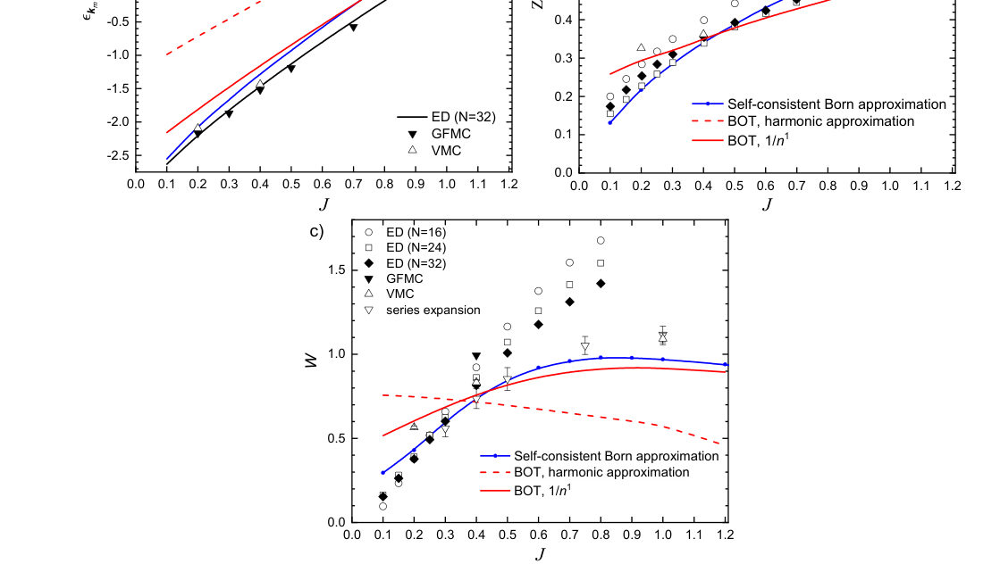
<figcaption class="paper-figure-caption"><b>Fig 1.</b> FIG. 1: a) Ground state energy of the t–J model on the square lattice with one hole counted from the energy of the system without holes (which is given by the spectrum of the magnetic polaron ϵk in its minimum at k = km = (π/2, π/2)) found using exact diagonalization (ED) of a cluster containing N = 32 sites (the data are fitted by the formula −3.24 + 2.65J0.72)19, the self-consistent Born approximation (SCBA) on 16 × 16 cluster (the data are fitted accurately by J −3.23 + 2.94J0.702),20 the Green’s function Monte Carlo (GFMC) technique,21–23 variational Monte Carlo (VMC) method,24 and in the BOT (present study). b) Spectral weight Zk=km of the polaron in the electron Green’s function. c)...</figcaption>
</figure>
<figure class="paper-figure-card">
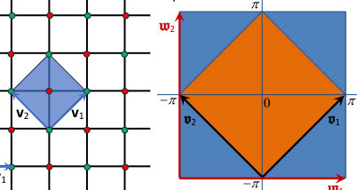
<figcaption class="paper-figure-caption"><b>Fig 2.</b> FIG. 2: (a) Square lattice with two sites in the unit cell highlighted in color. Also shown are corresponding translation vectors v1,2 as well as translation vectors w1,2 of the square lattice. (b) Brillouin zones corresponding to v1,2 (smaller square with respective translation vectors v1,2) and w1,2 (larger square with respective translation vectors w1,2). The distance between nearest lattice sites is set to be equal to unity.</figcaption>
</figure>
<figure class="paper-figure-card">
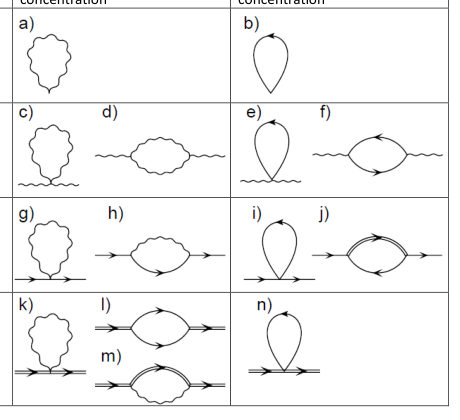
<figcaption class="paper-figure-caption"><b>Fig 3.</b> FIG. 3: Diagrams giving corrections of the first order in 1/n to the ground state energy, the staggered magnetization, and to self-energy parts (SEPs) of magnons, the amplitude mode, one-holon fermions, and two-holon bosons. Wavy lines denote magnon and/or Higgs mode. Straight and double straight lines stand for Green’s functions of one-holon fermions and two-holon bosons, respectively.</figcaption>
</figure>
<figure class="paper-figure-card">
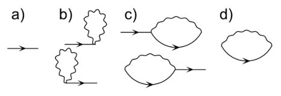
<figcaption class="paper-figure-caption"><b>Fig 4.</b> FIG. 4: Diagrams giving corrections of the first order in 1/n to electron Green’s function (36) at zero concentration of holes. As in Fig. 3, wavy lines denote magnon and/or Higgs mode and straight lines stand for fermions Green’s functions.</figcaption>
</figure>
<figure class="paper-figure-card">
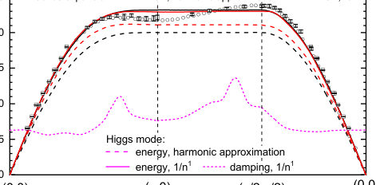
<figcaption class="paper-figure-caption"><b>Fig 5.</b> FIG. 5: Spectra in units of J of magnetic elementary excitations, magnons and the amplitude (Higgs) mode, in t–J models at zero concentration of holes found using the proposed bond-operator technique (BOT). Also shown are magnon spectra obtained by series expansion around the Ising limit31, within the spin-wave theory (SWT), and neutron scattering experiment in a molecular compound abbreviated as CFTD32,33 which is described well by spin- 1</figcaption>
</figure>
</div>

<p><strong>Summary.</strong> This paper introduces the Bond-Operator Theory (BOT) as an analytical framework to study the strongly correlated $t$-$J$ model. By reformulating electron operators using localized spins and holon fermions, BOT systematically expands physical quantities in powers of $1/n$. The theory successfully reproduces key magnetic and superconducting properties, showing strong quantitative agreement with state-of-the-art numerical simulations.</p>
<p><strong>Why it may be interesting.</strong> While focused on condensed matter magnetism/superconductivity, the use of an advanced operator formalism that systematically handles constraints and provides a controlled series expansion is valuable for theoretical physics dealing with complex many-body Hamiltonians.</p>
<details>
<summary>Detailed structure</summary>
<p><strong>Main problem.</strong> The paper aims to develop an analytical, constraint-free theory for the $t$-$J$ model, which is crucial for understanding high-temperature superconductivity in cuprates.</p>
<p><strong>Main result.</strong> The Bond-Operator Theory (BOT) provides a systematic expansion in powers of $1/n$, yielding quantitative agreement with advanced numerical methods for ground state energy and excitation spectra.</p>
<p><strong>Method.</strong> The core method is the Bond-Operator Theory, which reformulates electron operators using localized spins and mobile holon Fermi-operators to eliminate physical constraints inherent in simpler models.</p>
<p><strong>Model / system.</strong> The system studied is the one-band $t$-$J$ model on a square lattice, described by an effective Hamiltonian involving hopping ($t$) and exchange coupling ($J$). The theory handles both magnetically ordered and disordered phases.</p>
<p><strong>Key observables.</strong> Ground state energy, staggered magnetization, magnon spectra, polaron spectrum, and two-hole bound state binding energies.</p>
<p><strong>Important parameters / regimes.</strong> The expansion parameter is $1/n$, where $n$ relates to the maximum number of quasiparticles per unit cell. The model parameters are $t$ and $J$.</p>
<p><strong>Assumptions / limitations.</strong> The primary assumption is that physical quantities can be expanded as a regular series in powers of $1/n$; however, the first-order expansion is noted to be insufficient for full quantitative accuracy.</p>
<p><strong>Figures summary.</strong> Figures compare calculated spectra (magnons, polarons) and spectral weights using BOT against results from Self-Consistent Born Approximation (SCBA), Exact Diagonalization (ED), and Green's Function Monte Carlo (GFMC).</p>
<p><strong>Paper structure.</strong> The paper introduces the BOT formalism by mapping electron operators to spin/holon operators, derives the effective Hamiltonian, calculates observables via diagrammatic expansion in $1/n$, and compares results for various excitations (magnons, polarons) against established numerical benchmarks.</p>
</details>
<details>
<summary>Abstract</summary>
<p>We present a bond-operator theory (BOT) for analytical consideration of the $t$-$J$ model and its extensions with longer-rage hopping terms. This technique is based on previously suggested representation of electron operators via localized spins 1/2 and spinless Fermi-operators of mobile holons which requires no constraint between them. We introduce a representation of operators of spins, holons, and electrons in (extended) unit cell containing several lattice sites via a zoo of Bose- and Fermi-operators acting in the Hilbert space of all quantum states of the whole unit cell. BOT provides a regular expansion of physical quantities in powers of $1/n$ using conventional diagrammatic technique, where $n\ge1$ is the maximum number of introduced quasiparticles (bosons and fermions) which can occupy a unit cell. The suggested representation reproduces commutation algebra of all operators at any $n>0$ and allows to consider both magnetically ordered and disordered phases. Some elementary excitations described in the BOT by separate bosons or fermions appear in common approaches as bound states of conventional quasiparticles. In particular, there are two-hole bound states (Cooper pairs of two holes) which are described within the BOT by separate bosons. We discuss in detail properties of the $t$-$J$ model on the square lattice with no more than two holes (polarons). Although the expansion parameter $1/n$ is not small in the physically meaningful case of $n=1$, we obtain a good quantitative agreement with previous numerical findings at $n=1$ even in the first order in $1/n$ after taking into account a few simple diagrams. Self-consistent calculations in the first order in $1/n$ bring our results to a very good quantitative agreement with previous numerical findings of the ground state energy, staggered magnetization, and spectra of magnons, polarons, and lowest-energy two-hole bound states.</p>
</details>
<p><sub><a href="#top">↑ back to top</a></sub></p>

<p><a id="paper-2606.13778"></a></p>
<h3 id="resurgence-of-the-thermal-transition-between-bounce-and-sphaleron"><a href="http://arxiv.org/abs/2606.13778v1">Resurgence of the Thermal Transition between Bounce and Sphaleron</a></h3>
<p><strong>Authors:</strong> Shaun D. Hampton, Kyungsun Lee, Sungjay Lee<br>
<strong>Type:</strong> theory · <strong>Category:</strong> statistical mechanics · <strong>PDF:</strong> <a href="https://arxiv.org/pdf/2606.13778v1">https://arxiv.org/pdf/2606.13778v1</a><br>
<strong>Analysis basis:</strong> full PDF text, analyzed in chunks
<strong>Topic relevance:</strong> <code>Keldysh / 2PI / non-Gaussian methods</code> <strong>1/5</strong> · <code>driven-dissipative phase transition</code> <strong>1/5</strong> · <code>methods for driven-dissipative</code> <strong>1/5</strong></p>
<div class="figure-strip-hint">↔ Scroll figures horizontally</div>
<div class="paper-figures-scroll">
<figure class="paper-figure-card">
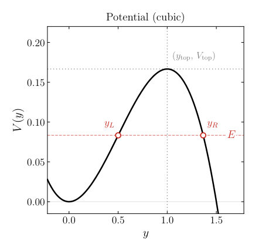
<figcaption class="paper-figure-caption"><b>Fig 1.</b> Figure 1: The two metastable potentials. Left: the cubic potential (20), with metastable minimum at y = 0 and barrier top at (ytop, Vtop) = (1, 1/6). Right: the quintic potential (21), with metastable minimum at y = 0 and barrier top at (ytop, Vtop) ≃(0.311, 8.30 × 10−3).</figcaption>
</figure>
<figure class="paper-figure-card">
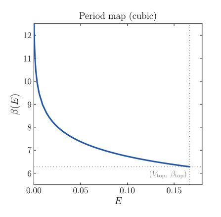
<figcaption class="paper-figure-caption"><b>Fig 2.</b> Figure 2: Period maps β(E) of the two models. Left (cubic): β(E) de- creases monotonically from infinity at the false vacuum to the harmonic limit (Vtop, βtop) = (1/6, 2π). Right (quintic): β(E) is non-monotone, de- scending past the harmonic limit (Vtop, βtop) ≃(8.30 × 10−3, 12.13) to the fold bifurcation (Ebif, βbif) ≃(3.82 × 10−3, 11.16) and rising back to βtop.</figcaption>
</figure>
<figure class="paper-figure-card">
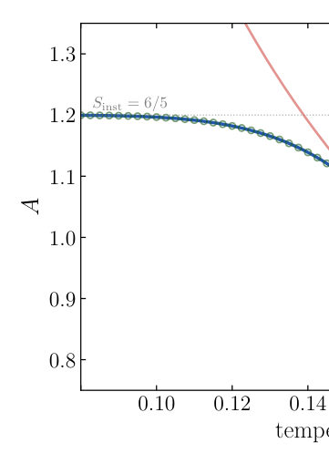
<figcaption class="paper-figure-caption"><b>Fig 3.</b> Figure 3: Cubic potential. Borel singularity A(T) compared with the clas- sical sphaleron action βVtop and bounce action Sb(T). The two branches join tangentially at Tc = Ttop = (2π)−1 ≈0.159.</figcaption>
</figure>
<figure class="paper-figure-card">
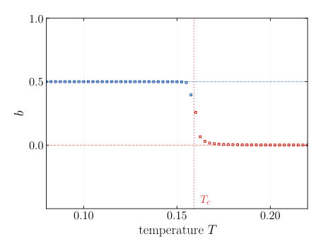
<figcaption class="paper-figure-caption"><b>Fig 4.</b> Figure 4: Cubic potential. Left: characteristic exponent b(T) against the theoretical values 0 and 1/2 (dashed). Right: Stokes ratio S/Sth, near unity away from Tc on both sides and dipping near Tc.</figcaption>
</figure>
<figure class="paper-figure-card">
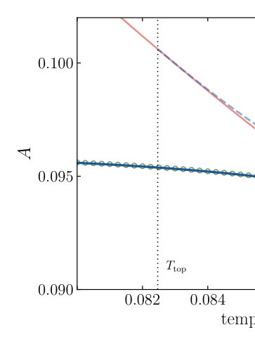
<figcaption class="paper-figure-caption"><b>Fig 5.</b> Figure 5: Quintic potential. Borel singularity A(T), compared with the classical sphaleron action βVtop and the dominant bounce action Sb(T), which cross transversally at Tc ≃0.0878. The dashed branch is the sub- dominant bounce, present between Ttop and Tbif.</figcaption>
</figure>
</div>

<p><strong>Summary.</strong> This paper uses Borel resurgence theory to analyze the thermal transition between two competing vacuum decay mechanisms: the bounce (quantum tunneling) and the sphaleron (thermal barrier crossing). By analyzing high-order perturbative expansions of the free energy, the authors successfully determine the critical temperature and whether the transition is first or second order for specific potential models. This demonstrates a powerful technique to extract non-perturbative physics without relying on traditional semiclassical approximations.</p>
<p><strong>Why it may be interesting.</strong> The methodology provides a powerful, purely perturbative route to calculate non-perturbative quantities like tunneling rates and critical temperatures, which is highly valuable in understanding phase transitions in quantum field theory or condensed matter systems where semiclassical methods are traditionally used.</p>
<details>
<summary>Detailed structure</summary>
<p><strong>Main problem.</strong> The study investigates the thermal transition between two competing non-perturbative saddle points—the bounce (tunneling) and the sphaleron (thermal jump)—in a quantum system with a metastable vacuum.</p>
<p><strong>Main result.</strong> The Borel resurgence analysis successfully determines the transition temperature, order (second or first), and one-loop prefactors purely from high-order perturbative expansions, without needing semiclassical inputs.</p>
<p><strong>Method.</strong> The core method involves calculating the perturbative expansion of the thermal free energy and extracting non-perturbative information by analyzing its Borel singularity data $(A, b, S)$.</p>
<p><strong>Model / system.</strong> The analysis is performed on quantum mechanical systems with metastable potentials, specifically modeling cases leading to second-order (cubic potential) and first-order (quintic potential) phase transitions.</p>
<p><strong>Key observables.</strong> Thermal free energy $F(eta)$, Borel singularity location ($A$), characteristic exponent ($b$), and Stokes constant ($S$).</p>
<p><strong>Important parameters / regimes.</strong> Temperature ($T$ or $eta$), the transition temperature ($T_c$), and the coupling/potential parameters defining the specific models.</p>
<p><strong>Assumptions / limitations.</strong> The analysis relies on treating the weak-coupling expansion as a semi-classical approximation and assumes that Borel resurgence theory can fully encode the non-perturbative physics across the transition.</p>
<p><strong>Figures summary.</strong> Figures compare the extracted Borel singularity $A(T)$ against classical saddle actions, showing smooth joining for second-order transitions and clear kinks/crossings for first-order transitions in the quintic model.</p>
<p><strong>Paper structure.</strong> The paper systematically applies Borel resurgence to compute high-order coefficients of the free energy. It then analyzes how the extracted parameters $(A, b, S)$ characterize the nature (second vs. first order) and location ($T_c$) of the thermal transition between the bounce and sphaleron saddle points for different potentials.</p>
</details>
<details>
<summary>Abstract</summary>
<p>We study the thermal transition between the bounce and the sphaleron in quantum mechanics with a metastable vacuum from the viewpoint of Borel resurgence. For two models representing a second-order and a first-order transition, we compute the perturbative expansion of the thermal free energy to high orders and extract the leading Borel singularity data $(A,b,S)$ as functions of temperature. The Borel singularity location $A$ reproduces the on-shell action of the dominant saddle on both sides of the transition, joining smoothly in the second-order case and developing a kink in the first-order case. The characteristic exponent $b$ jumps between $0$ and $1/2$ across the transition, counting the zero modes of the corresponding saddle. The Stokes constant $S$ matches the one-loop determinant around the saddle. The perturbative expansion around the false vacuum thus determines the transition temperature, the order of the transition, and the decay rate including the one-loop prefactor without relying on semiclassical inputs.</p>
</details>
<p><sub><a href="#top">↑ back to top</a></sub></p>

<p><a id="paper-2606.14624"></a></p>
<h3 id="spin-disorder-competing-with-positional-symmetry-breaking-governs-the-metal-insulator-behavior-in-oxide-paramagnets"><a href="http://arxiv.org/abs/2606.14624v1">Spin disorder competing with positional symmetry breaking governs the metal-insulator behavior in oxide paramagnets</a></h3>
<p><strong>Authors:</strong> Jia-Xin Xiong, Xiuwen Zhang, Alex Zunger<br>
<strong>Type:</strong> theory · <strong>Category:</strong> other · <strong>PDF:</strong> <a href="https://arxiv.org/pdf/2606.14624v1">https://arxiv.org/pdf/2606.14624v1</a><br>
<strong>Analysis basis:</strong> full PDF text, analyzed in chunks
<strong>Topic relevance:</strong> <code>analog quantum simulation</code> <strong>1/5</strong> · <code>exotic spin models in light-matter</code> <strong>1/5</strong> · <code>spintronics-quantum-optics interface</code> <strong>1/5</strong></p>
<div class="figure-strip-hint">↔ Scroll figures horizontally</div>
<div class="paper-figures-scroll">
<figure class="paper-figure-card">

<figcaption class="paper-figure-caption"><b>Fig 1.</b> Figure 1. DFT-calculated projected density of states of PM and AFM phases of (a) NaOsO3 and (b) NaFeO3 that have the orthorhombic crystallographic structures (Pnma). Both AFM phases are insulating, but the PM NaOsO3 is metallic while the PM NaFeO3 is insulating.</figcaption>
</figure>
<figure class="paper-figure-card">
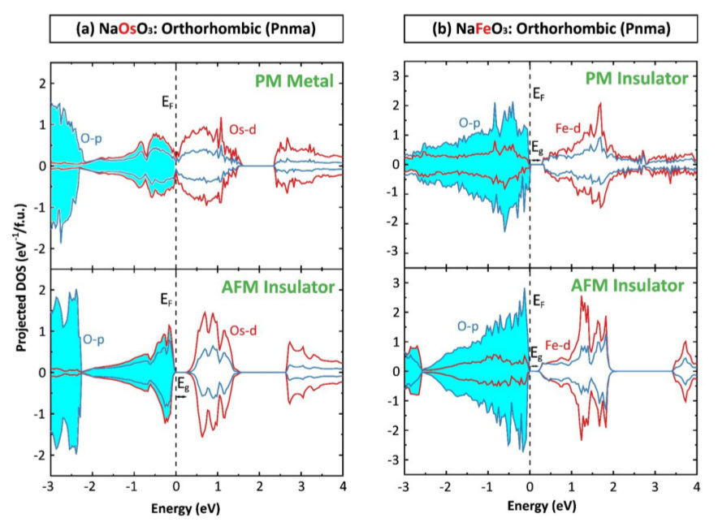
<figcaption class="paper-figure-caption"><b>Fig 2.</b> Figure 2 shows the distribution of local magnetic moments in PM and AFM phases of NaOsO3 and NaFeO3. Although the net total magnetization is zero, there exists non-zero local magnetic moments in both PM and AFM phases. The distribution of magnetic moments in PM phases cannot be mimicked by the nonmagnetic phases that are often assumed in many works [13– 16,27,28] on transition-metal oxides in the view of strong correlation as the exclusive factor.</figcaption>
</figure>
<figure class="paper-figure-card">
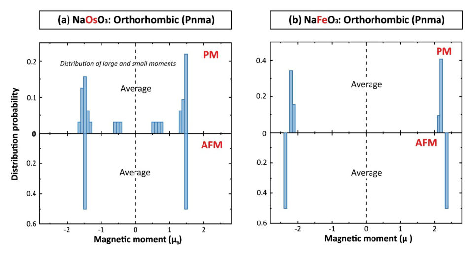
<figcaption class="paper-figure-caption"><b>Fig 3.</b> Figure 2. DFT-calculated normalized distribution probability of local magnetic moments in PM and AFM phases of (a) NaOsO3 and (b) NaFeO3 that have the orthorhombic crystallographic structures (Pnma). The vertical dashed lines show the average of all local magnetic moments being zero. All the bin widths of local magnetic moments are set to be 0.08 𝜇𝐵.</figcaption>
</figure>
<figure class="paper-figure-card">
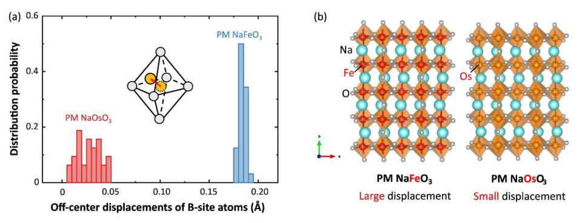
<figcaption class="paper-figure-caption"><b>Fig 4.</b> Figure 3. (a) Normalized distribution probability of the octahedral off-center displacements of B-site atoms in PM phases of NaOsO3 and NaFeO3 with (b) orthorhombic crystallographic structures (Pnma). Both PM structures are</figcaption>
</figure>
<figure class="paper-figure-card">
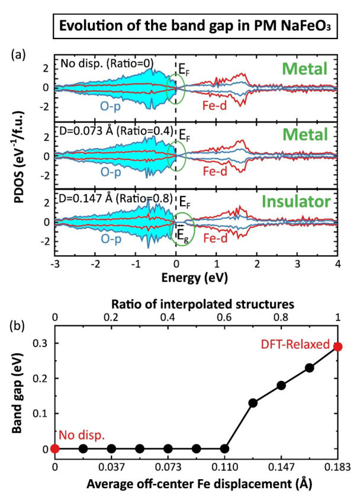
<figcaption class="paper-figure-caption"><b>Fig 5.</b> Figure 4. Evolution of the band gap in PM NaFeO3: (a) Density of states and (b) PM band gap as a function of average off-center Fe displacement at different ratios of linear interpolated structures. The two red points in (b) represent the two ending points of structures that are used for the basis of linear interpolation.</figcaption>
</figure>
</div>

<p><strong>Summary.</strong> This work develops a general theoretical framework using symmetry-broken DFT to explain metal-insulator transitions in paramagnetic transition-metal oxides. It shows that the electronic state depends critically on the competition between spin disorder and atomic positional displacements, successfully distinguishing why $ ext{NaFeO}_3$ is insulating while $ ext{NaOsO}_3$ is metallic.</p>
<p><strong>Why it may be interesting.</strong> While focused on solid-state physics, the concept of emergent electronic behavior arising from competing structural/magnetic degrees of freedom (disorder) is relevant to understanding complex quantum many-body systems where multiple order parameters compete.</p>
<details>
<summary>Detailed structure</summary>
<p><strong>Main problem.</strong> The study aims to determine the fundamental physical mechanism governing whether the high-temperature paramagnetic (PM) phase of transition-metal oxide paramagnets is metallic or insulating.</p>
<p><strong>Main result.</strong> The metal-insulator behavior in these PM phases is governed by a competition between spin disorder (local moment distribution) and positional symmetry breaking (atomic displacements).</p>
<p><strong>Method.</strong> Symmetry-broken Density-Functional Theory (DFT) calculations are employed to model the electronic structure of both insulating and metallic states.</p>
<p><strong>Model / system.</strong> The research focuses on transition-metal oxides, specifically comparing $   ext{NaFeO}_3$ (insulating PM phase) and $   ext{NaOsO}_3$ (metallic PM phase). Calculations utilize spin special-quasirandom structures to model disorder without assuming long-range order.</p>
<p><strong>Key observables.</strong> Band gap size ($   ext{eV}$), local magnetic moment distribution, and magnitude of off-center atomic displacements ($  ext{\AA}$).</p>
<p><strong>Important parameters / regimes.</strong> The competition between spin disorder strength and the degree of positional polymorphism is key; strong correlation effects are explicitly avoided.</p>
<p><strong>Assumptions / limitations.</strong> The approach avoids invoking strong electronic correlations by using DFT methods that model symmetry breaking via configurational averaging (spin-SQS).</p>
<p><strong>Figures summary.</strong> Figures illustrate the DOS, showing gap closing for $  ext{NaOsO}_3$ and gap opening/insulating behavior for $ ext{NaFeO}_3$, correlating these changes with moment distributions and atomic displacements.</p>
<p><strong>Paper structure.</strong> The paper establishes the problem by contrasting insulating vs. metallic PM phases in oxides. It then develops a general framework based on analyzing how spin disorder interacts with positional symmetry breaking, using DFT calculations on specific examples ($    ext{NaFeO}_3$ vs $  ext{NaOsO}_3$) to validate this competition.</p>
</details>
<details>
<summary>Abstract</summary>
<p>Numerous transition-metal oxides have low-temperature antiferromagnetic (AFM) states and high-temperature paramagnetic (PM) phases, where the AFM state is usually insulating while the PM phase can be either insulating or metallic. Without involving strong correlation, we use symmetry-broken density-functional theory (DFT) to obtain the PM phases of insulating NaFeO3 vs the recently discovered metallic NaOsO3. We develop the understanding of insulating and metallic behaviors in paramagnetic oxides by analyzing the interactions between magnetic and positional symmetry breaking: The insulating gap is governed by the competition between the spin disorder that induces a distribution of different magnitudes of local magnetic moments and the polymorphous distribution of off-center atomic displacements. NaFeO3, on the other hand, has large positional displacement with small spin-disorder-induced moments distribution, leading to insulating PM phase, whereas NaOsO3 has a pronounced spin-disorder-induced moments distribution that forces the PM phase to become metallic. Our work identifies this symmetry-breaking competition as a general framework to bridge seemingly disparate metal-insulator behaviors in transition-metal oxides paramagnets without invoking strong correlation.</p>
</details>
<p><sub><a href="#top">↑ back to top</a></sub></p>

<p><a id="paper-2606.14226"></a></p>
<h3 id="efficient-simulation-of-szegedy-quantum-walk-formulations-and-algorithms"><a href="http://arxiv.org/abs/2606.14226v1">Efficient Simulation of Szegedy Quantum Walk Formulations and Algorithms</a></h3>
<p><strong>Authors:</strong> Sergio A. Ortega, Daniel K. Park<br>
<strong>Type:</strong> theory · <strong>Category:</strong> numerical methods · <strong>PDF:</strong> <a href="https://arxiv.org/pdf/2606.14226v1">https://arxiv.org/pdf/2606.14226v1</a><br>
<strong>Analysis basis:</strong> full PDF text, analyzed in chunks
<strong>Topic relevance:</strong> <code>methods for driven-dissipative</code> <strong>1/5</strong> · <code>non-equilibrium dynamics</code> <strong>1/5</strong></p>
<div class="figure-strip-hint">↔ Scroll figures horizontally</div>
<div class="paper-figures-scroll">
<figure class="paper-figure-card">
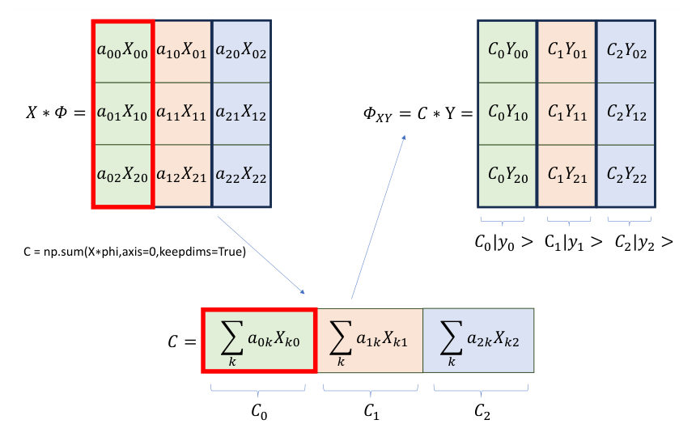
<figcaption class="paper-figure-caption"><b>Fig 1.</b> Figure 1. Expansion-recomposition example for a graph with N = 3 nodes. For the expansion in the set of states |xi⟩, the coefficients are calculated by the element-wise multiplication of the matrix X and the matrix state Φ, and then adding over the rows. For the recomposition on a set of states |yi⟩, the coefficients vector C is multiplied element-wise with each row of the matrix Y .</figcaption>
</figure>
<figure class="paper-figure-card">
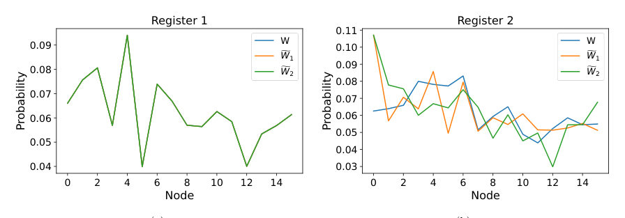
<figcaption class="paper-figure-caption"><b>Fig 2.</b> Figure 2. Probability distributions of different Szegedy walk formulations on a random graph with N = 16 nodes after 5 time steps, measuring (a) the first register, and (b) the second register. The results are the same for the first register, whereas for the second register the results depend on the particular implementation of the update operator V .</figcaption>
</figure>
<figure class="paper-figure-card">
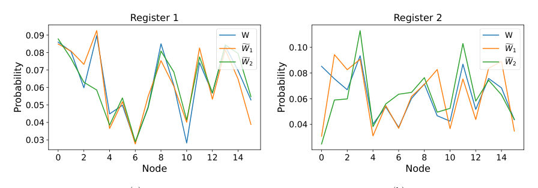
<figcaption class="paper-figure-caption"><b>Fig 3.</b> Figure 3. Probability distributions of different Szegedy walk formulations on a random graph with N = 16 nodes after 5 time steps, where the walk is performed with a different Markov chain at each step. The results are obtained by measuring (a) the first register, and (b) the second register. The results for both registers are different, indicating that they depend on the particular implementation of the update operator V .</figcaption>
</figure>
<figure class="paper-figure-card">
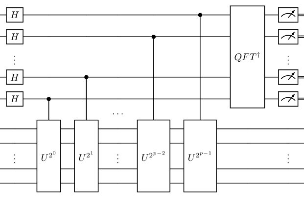
<figcaption class="paper-figure-caption"><b>Fig 4.</b> Figure 4. Quantum circuit for the quantum phase estimation algorithm. For a graph with N = 2n, each of the two registers of the Szegedy walk requires n qubits, so that the walk register as a whole requires 2n qubits. The unitary operator U in the circuit represents in a generic form any walk evolution operator of the ones described along the paper, and the state |ϕ⟩ represents an arbitrary walk state as in equation (19). When this is an eigenstate of U with eigenvalue eiθ, the measurement in the phase register provides a p-bit approximation of the quantity 2pθ/2π. If the state |ϕ⟩is a linear combination of eigenstates, then different phases can be obtained with probabilities provided by...</figcaption>
</figure>
<figure class="paper-figure-card">
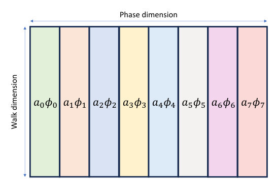
<figcaption class="paper-figure-caption"><b>Fig 5.</b> Figure 5. Matrix representation of an arbitrary state |ξ⟩of the form in (37). Each column corresponds to a walk state |ϕx⟩. In the example, the phase register has p = 3 qubits, so that there are 23 = 8 walk states.</figcaption>
</figure>
</div>

<p><strong>Summary.</strong> The paper presents a highly efficient classical simulation framework for Szegedy quantum walks and related algorithms. It bypasses the need to construct massive unitary matrices by decomposing evolution into fundamental operator actions like updates and reflections. This allows researchers to numerically study complex quantum processes, such as search and annealing, on large graphs.</p>
<p><strong>Why it may be interesting.</strong> This work provides concrete, scalable computational tools for simulating quantum dynamics that are otherwise intractable due to exponential Hilbert space size, bridging theoretical quantum algorithm design with practical numerical implementation.</p>
<details>
<summary>Detailed structure</summary>
<p><strong>Main problem.</strong> Developing efficient classical simulation methods for Szegedy quantum walks and related phase-estimation algorithms that avoid constructing large, explicit unitary evolution operators.</p>
<p><strong>Main result.</strong> The framework achieves optimal O(N^2) complexity for dense graphs and linear scaling with edges for sparse graphs by simulating fundamental update and reflection operators directly.</p>
<p><strong>Method.</strong> Simulation relies on expressing the walk evolution using fundamental operators (Update $V$, Reflection $R_0$) and employing techniques like expansion-recomposition or working in a reduced subspace representation for sparse graphs. Quantum Phase Estimation (QPE) is used to implement amplitude amplification steps.</p>
<p><strong>Model / system.</strong> The model is the Szegedy quantum walk on a graph with N nodes, operating in an $N^2$-dimensional Hilbert space. Applications include quantum simulated annealing and quantum search algorithms.</p>
<p><strong>Key observables.</strong> Probability distributions of finding the system at marked nodes or measuring specific phases ($    heta$) during QPE.</p>
<p><strong>Important parameters / regimes.</strong> Graph size (N), number of edges, simulation time steps, and precision limits related to QPE repetitions.</p>
<p><strong>Assumptions / limitations.</strong> The update operator $V$ is not unique, but the framework shows consistency for certain measurements. For sparse graphs, a reduced subspace representation $\mathcal{H}_R$ is used, assuming all necessary operators map within this space.</p>
<p><strong>Figures summary.</strong> Figures illustrate probability distributions over time steps and marked nodes for quantum search; diagrams show QPE circuits and the mathematical procedure of expansion-recomposition in the reduced vector space.</p>
<p><strong>Paper structure.</strong> The paper progresses from defining the walk evolution using fundamental operators, detailing the numerical simulation techniques (especially for sparse graphs via subspace reduction), applying these methods to complex algorithms like QPE and amplitude amplification, and finally demonstrating results on search problems.</p>
</details>
<details>
<summary>Abstract</summary>
<p>Quantum walks provide a versatile framework for quantum algorithms across a wide range of applications. We develop efficient classical simulation methods for Szegedy quantum walks that avoid explicit construction of the full unitary evolution operator. Unlike previous approaches restricted to a particular walk formulation, our framework is built from fundamental update and reflection operators, enabling the simulation of a broader class of Szegedy walk formulations. We further extend these methods to phase-estimation-based algorithms coupled to the walk, including implementations suitable for large sparse graphs. The resulting methods achieve optimal $O(N^2)$ complexity for dense graphs with $N$ nodes. For sparse graphs, the computational cost scales linearly with the number of edges, which is $O(N)$ in many cases. We implement the framework in the Python package SQWLib and illustrate its capabilities through simulations of representative algorithms, including quantum simulated annealing and quantum search on graphs. These results provide a practical tool for studying Szegedy-walk-based algorithms numerically beyond purely analytical treatments.</p>
</details>
<p><sub><a href="#top">↑ back to top</a></sub></p>

<p><a id="paper-2606.14425"></a></p>
<h3 id="smoqyelphqmcjl-an-open-source-julia-package-for-efficient-and-scalable-quantum-monte-carlo-simulations-of-electron-phonon-coupled-models"><a href="http://arxiv.org/abs/2606.14425v1">SmoQyElPhQMC.jl: An open-source Julia package for efficient and scalable quantum Monte Carlo simulations of electron-phonon coupled models</a></h3>
<p><strong>Authors:</strong> Benjamin Cohen-Stead, James Neuhaus, Kipton Barros, Thomas A. Maier, Steven Johnston<br>
<strong>Type:</strong> theory · <strong>Category:</strong> strongly correlated electrons · <strong>PDF:</strong> <a href="https://arxiv.org/pdf/2606.14425v1">https://arxiv.org/pdf/2606.14425v1</a><br>
<strong>Analysis basis:</strong> full PDF text, analyzed in chunks
<strong>Topic relevance:</strong> <code>Frenkel-Kontorova</code> <strong>1/5</strong> · <code>Keldysh / 2PI / non-Gaussian methods</code> <strong>1/5</strong></p>
<div class="figure-strip-hint">↔ Scroll figures horizontally</div>
<div class="paper-figures-scroll">
<figure class="paper-figure-card">
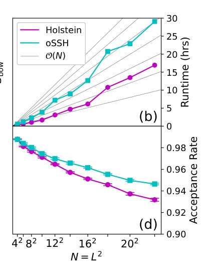
<figcaption class="paper-figure-caption"><b>Fig 1.</b> Figure 1: Simulation results for the Holstein and oSSH models on square lattices of size N = L2, for β t = 10, Ω/t = 0.5, µ = 0 (half-filling), and λh = 0.25 and λo = 0.36. Panel (a) displays the CDW and BOW structure factors measured in sim- ulations of the Holstein and oSSH model simulations, respectively. Panel (b) displays the runtime for simulations of each model (see text for details of the hardware). The thin lines in the background indicate functions of the form t = AN, where A is a constant, and serve as guides for the eye. Panel (c) displays the average number of CG iterations per solve during the simulation, averaged over both updates and measurements. Panel (d) displays the...</figcaption>
</figure>
<figure class="paper-figure-card">
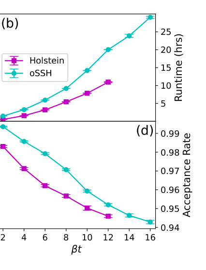
<figcaption class="paper-figure-caption"><b>Fig 2.</b> Figure 2: Results for simulations of Holstein and oSSH models on a N = 16 × 16 site square lattice at various inverse temperatures β, with Ω/t = 0.5 and µ = 0.0, and λh = 0.25 and λo = 0.36 in each model, respectively. Panel (a) displays the CDW and BOW structure factors measured in simulations of the Holstein and oSSH model simulations, respectively. Panel (b) displays the runtime for simulations of each model. Panel (c) displays the average number of CG iterations per solve during the simulation, averaged over both updates and measurements. Panel (d) displays the acceptance rate for the HMC updates in the simulations.</figcaption>
</figure>
<figure class="paper-figure-card">
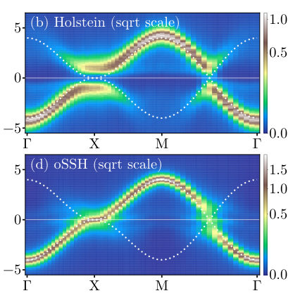
<figcaption class="paper-figure-caption"><b>Fig 3.</b> Figure 3: Single-particle electron spectral function A(k,ω) as a function of momen- tum k along a high symmetry cut through the Brillouin zone. Solid white lines at ω = Ef = 0 indicate the Fermi energy. The dashed white lines denote the non- interacting electron band, and its reflection about the Fermi energy Ef . All results are for a N = 36 × 36 square lattice at β t = 10.0 and phonon energies of Ω/t = 0.5. (a) The Holstein model spectral function A(k,ω) for λh = 0.25. (b) Holstein model spectral function plotted on a square-root scale to accentuate finer features. (c) The oSSH model spectral function A(k,ω) for λo = 0.36. (d) Optical SSH model spec- tral function plotted on a square-root...</figcaption>
</figure>
</div>

<p><strong>Summary.</strong> This work introduces an open-source Julia package, SmoQyElPhQMC.jl, designed for scalable Quantum Monte Carlo simulations of electron-phonon coupled models. By implementing advanced techniques like the Checkerboard Approximation and Kernel Polynomial Method preconditioning, it achieves near-linear scaling in system size and inverse temperature. The package is used to study phenomena such as charge density wave formation in canonical models like Holstein and oSSH.</p>
<p><strong>Why it may be interesting.</strong> The development of highly efficient numerical tools like SmoQyElPhQMC.jl to tackle strongly coupled lattice dynamics is crucial for understanding emergent quantum phases relevant to superconductivity and charge ordering in condensed matter systems.</p>
<details>
<summary>Detailed structure</summary>
<p><strong>Main problem.</strong> The primary goal is to perform efficient and scalable Quantum Monte Carlo (QMC) simulations for electron-phonon coupled models.</p>
<p><strong>Main result.</strong> The package successfully enables near-linear scaling in system size and inverse temperature, allowing the study of CDW and BOW order formation in Holstein and oSSH models.</p>
<p><strong>Method.</strong> It utilizes advanced QMC techniques, including Hybrid Quantum Monte Carlo (HQMC) updates combined with the Checkerboard Approximation (MSCHK) and Kernel Polynomial Method (KPM) preconditioning for linear scaling.</p>
<p><strong>Model / system.</strong> The focus is on electron-phonon coupled Hamiltonians, specifically generalized spin-symmetric models like the Holstein model and the oSSH model. These systems involve coupling between itinerant electrons and lattice vibrations (phonons).</p>
<p><strong>Key observables.</strong> Charge structure factor ($S_{cdw}$), bond order wave structure factor ($S_{bow}$), single-particle electron spectral function $A(k, \omega)$, and correlation functions.</p>
<p><strong>Important parameters / regimes.</strong> The simulations are performed at finite temperatures ($eta$) and involve coupling strengths ($\lambda_h=0.25$, $\lambda_o=0.36$) and phonon frequencies ($\Omega/t = 0.5$).</p>
<p><strong>Assumptions / limitations.</strong> Key approximations include the MSCHK approximation to reduce scaling from $O(eta N^3)$ to $O(eta N)$, and using pseudofermion fields for determinant calculation.</p>
<p><strong>Figures summary.</strong> Figures show structure factors ($S_{cdw}, S_{bow}$) increasing with system size/inverse temperature, indicating CDW/BOW order. The spectral function $A(k, \omega)$ reveals gap openings consistent with insulating CDW order in the Holstein model.</p>
<p><strong>Paper structure.</strong> The paper introduces the package, details the Hamiltonian structure ($\hat{H} = \hat{U} + \hat{V} + \hat{K}$), explains the mathematical machinery for achieving linear scaling (MSCHK, pseudofermion fields, KPM preconditioning), and concludes with benchmark results on Holstein and oSSH models.</p>
</details>
<details>
<summary>Abstract</summary>
<p>We introduce version 1.0 of the SmoQyElPhQMC package, an open-source Julia code for performing scalable quantum Monte Carlo simulations of electron-phonon coupled model Hamiltonians. SmoQyElPhQMC is built upon the SmoQyDQMC codebase and implements improved versions of the algorithms presented in [B. Cohen-Stead \textit{et al}., Phys. Rev. E {\bf 105}, 065302 (2022)] to enable linear-scaling simulations of a broad class of uncorrelated $e$-ph models both in system size and inverse temperature. By extending the functionality of the flexible scripting interface introduced in SmoQyDQMC, the SmoQyElPhQMC package continues to allow users to adapt it to different workflows and interface with other software packages in the Julia ecosystem. The code for this package can be downloaded from our GitHub repository at https://github.com/SmoQySuite/SmoQyElPhQMC.jl or installed using the Julia package manager. The online documentation, including examples, can be obtained from our documentation page at https://smoqysuite.github.io/SmoQyElPhQMC.jl/stable/.</p>
</details>
<p><sub><a href="#top">↑ back to top</a></sub></p>

<p><a id="paper-2606.14370"></a></p>
<h3 id="spherical-metadensity-functional-learning-for-inhomogeneous-classical-fluids"><a href="http://arxiv.org/abs/2606.14370v1">Spherical metadensity functional learning for inhomogeneous classical fluids</a></h3>
<p><strong>Authors:</strong> Stefanie M. Kampa, Matthias Schmidt, Florian Sammüller<br>
<strong>Type:</strong> theory · <strong>Category:</strong> statistical mechanics · <strong>PDF:</strong> <a href="https://arxiv.org/pdf/2606.14370v1">https://arxiv.org/pdf/2606.14370v1</a><br>
<strong>Analysis basis:</strong> full PDF text, analyzed in chunks
<strong>Topic relevance:</strong> <code>Keldysh / 2PI / non-Gaussian methods</code> <strong>1/5</strong> · <code>methods for driven-dissipative</code> <strong>1/5</strong></p>
<div class="figure-strip-hint">↔ Scroll figures horizontally</div>
<div class="paper-figures-scroll">
<figure class="paper-figure-card">
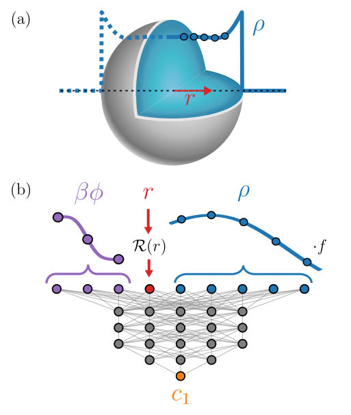
<figcaption class="paper-figure-caption"><b>Fig 1.</b> FIG. 1. Local learning in spherical geometry. (a) Sketch of the geometrical setup for the exemplary case of a fluid in spherical confinement. The resulting density profile ρ(r) is resolved (discretized) along the radial coordinate r and symmetrically extended for negative values of r, such that ρ(r) = ρ(−r). (b) The neural network consist of an input layer, several hidden layers (gray), and an output layer (or- ange), which yields the value of the one-body direct corre- lation functional c1(r; [ρ, βϕ]) at the considered radial posi- tion. As input, we provide the discretized scaled pair poten- tial βϕ(r) and the discretized density window ρ(r′) for radial distances r′ within a predefined...</figcaption>
</figure>
<figure class="paper-figure-card">
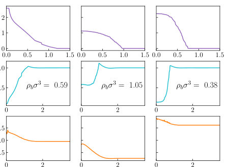
<figcaption class="paper-figure-caption"><b>Fig 2.</b> FIG. 2. Illustration of three exemplary test particle results (columns) used for training of the neural metadensity func- tional in spherical geometry. Randomized forms of the scaled pair potential βϕ(r) (first row) yield corresponding radial dis- tribution functions g(r) (middle row) and bulk densities (not shown), which correspond to one-body correlation functions c1(r) (bottom row) according to Eq. (7), whereby r/σ denotes the scaled distance from the origin, along which all profiles are resolved.</figcaption>
</figure>
<figure class="paper-figure-card">
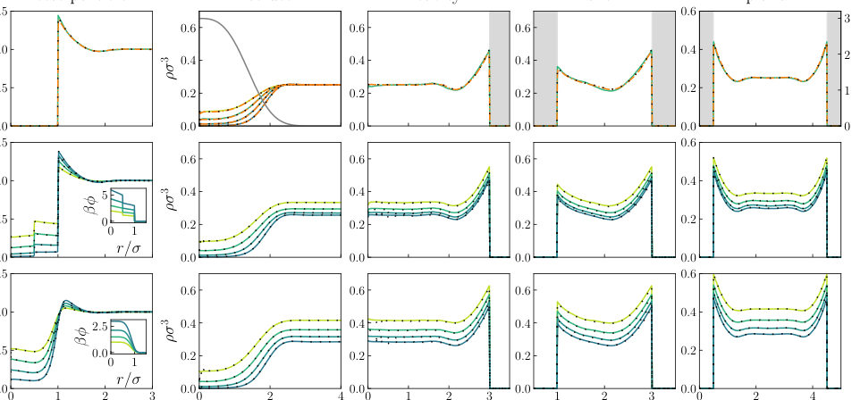
<figcaption class="paper-figure-caption"><b>Fig 3.</b> FIG. 3. Neural metadensity functional predictions for density profiles (solid lines) in selected inhomogeneous external potentials Vext(r) (grey lines). We consider a test particle fixed at the origin (first column), a penetrable solute at the origin (second column), a spherical cavity of radius 3σ (third column), confinement in a hard spherical shell (fourth column), and confinement between planar hard walls (fifth column). The scaled chemical potential of all systems is βµ = 0. The interaction potentials encompass hard spheres at fixed temperature (first row) as well as a two-step interaction potential (second row) and penetrable spheres (third row) at multiple scaled temperature values...</figcaption>
</figure>
<figure class="paper-figure-card">
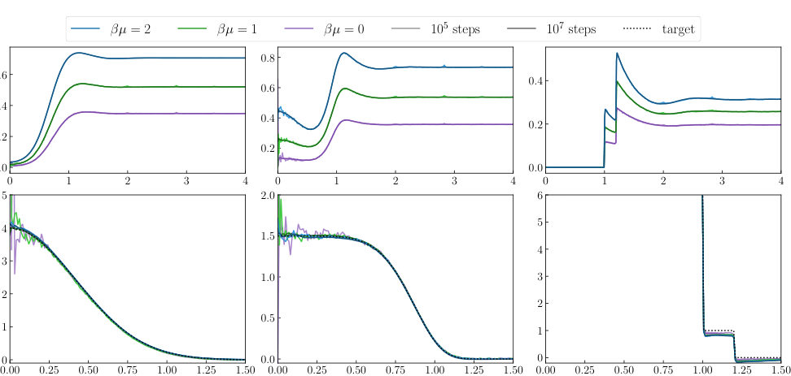
<figcaption class="paper-figure-caption"><b>Fig 4.</b> FIG. 4. Henderson inversion from given radial distribution functions g(r) at bulk densities ρb to the corresponding scaled pair potentials βϕ(r). As input, we take ρbg(r) (first row) obtained from bulk fluid simulations at kBT/ϵ = 1.0 and at different values of the scaled chemical potential βµ = 0, 1, 2 (as indicated). The neural metadensity functional then allows one to recover the corresponding scaled pair potentials (lower rows), as shown for three different representative choices (each column, respectively). The inversion is successful in all considered cases, as can be verified against the known forms of βϕ(r) that were employed in the simulations (black dotted lines). This continues...</figcaption>
</figure>
<figure class="paper-figure-card">
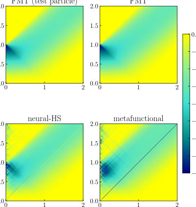
<figcaption class="paper-figure-caption"><b>Fig 5.</b> FIG. 5. Radially resolved two-body direct correlation function c2(r, r′) for the bulk hard sphere fluid at scaled chemical potential βµ = 1, corresponding to a bulk density ρbσ3 ≈0.34. Depicted are results from automatic differentia- tion of the neural metadensity functional (“metafunctional”) and from automatic differentiation of a separately trained functional that is purely applicable to the hard sphere fluid (“neural-HS”). For comparison, we show results from funda- mental measure theory, whereby we consider again simple automatic differentiation of the analytic fundamental mea- sure functional (“FMT”). As an additional consistency check (“FMT (test particle)”), we use fundamental...</figcaption>
</figure>
</div>

<p><strong>Summary.</strong> This work introduces a novel neural metadensity functional capable of modeling structural properties of inhomogeneous classical fluids in spherical geometries. By training on simulation data, it accurately predicts key correlation functions and demonstrates thermodynamic consistency across multiple calculation pathways. This represents an advanced ML approach to solving complex many-body statistical mechanics problems.</p>
<p><strong>Why it may be interesting.</strong> While focused on classical fluids, the rigorous application of machine learning to derive complex many-body functionals and verify fundamental physical symmetries is a powerful methodological tool applicable to quantum systems where exact functional forms are unknown.</p>
<details>
<summary>Detailed structure</summary>
<p><strong>Main problem.</strong> The paper develops a neural metadensity functional approach to model classical fluids with truncated interactions, specifically adapting the theory for three-dimensional spherical geometry.</p>
<p><strong>Main result.</strong> The framework successfully predicts structural properties and verifies thermodynamic consistency relations (like test particle sum rules) by comparing results derived from the neural network against established theories like Fundamental Measure Theory (FMT).</p>
<p><strong>Method.</strong> It uses supervised training of a neural network to represent the one-body direct correlation functional, $c_1$, which captures dependence on both density and pair potential in curved space.</p>
<p><strong>Model / system.</strong> The system is inhomogeneous classical fluids interacting via repulsive pairwise potentials ($\phi(r)$), studied under various confinements such as spherical cavities or test particle setups. The theory builds upon Density Functional Theory (DFT) principles.</p>
<p><strong>Key observables.</strong> One-body and two-body direct correlation functions ($c_1, c_2$), density profiles ($
ho(r)$), radial distribution functions ($g(r)$), and the excess chemical potential ($\mu_{exc}$).</p>
<p><strong>Important parameters / regimes.</strong> Spherical geometry effects (curvature), scaled pair potential ($eta\phi$), and thermodynamic parameters like temperature ($eta$) and chemical potential ($\mu$).</p>
<p><strong>Assumptions / limitations.</strong> The core assumption is that the functional dependence of $c_1$ can be accurately approximated by a neural network, and careful handling of spherical symmetry and geometric weighting functions is required.</p>
<p><strong>Figures summary.</strong> Figures illustrate density profiles in various confinements (cavities/shells), demonstrate Henderson inversion recovering pair potentials from $g(r)$, and compare calculated two-body correlation functions ($c_2$ and $ar{c}_2$) across different theoretical routes (FMT vs. Neural Functional).</p>
<p><strong>Paper structure.</strong> The paper progresses by establishing the DFT framework, detailing the adaptation of local learning for spherical geometry (incorporating curvature terms), deriving relationships for two-body correlations ($c_2$), and finally validating the functional's thermodynamic consistency across multiple calculation routes.</p>
</details>
<details>
<summary>Abstract</summary>
<p>We develop classical density functional learning to address fluids with truncated pairwise interparticle interactions in three-dimensional spherical geometry. Simulation data for systems with randomized repulsive pair potentials provide the basis for supervised training of a neural metadensity functional, thereby making efficient use of results for radial distribution functions in the bulk fluid via the test particle route. Specifically, we develop spherical local learning in order to represent the one-body direct correlation functional in terms of a neural network, which captures spatial curvature effects as well as the metadensity functional dependence on the thermally scaled pair potential. The framework yields efficient access to inhomogeneous structuring and related physical phenomena that occur in fluids and general solvents when adsorbed against curved solutes and confined inside of spherical and planar cavities. Test particle setups facilitate accurate prediction of the bulk fluid pair structure and verification of thermodynamic test particle sum rules via functional line integration. Applying the metadensity functional for Henderson inversion allows one to infer accurately the pair potential from the bulk radial distribution function. We address implications of the geometrical setup for two-body quantities and obtain the two-body direct correlation functional from automatic differentiation. For the hard sphere fluid, we confirm metadensity functional predictions against results from a standard neural density functional with fixed pair potential as well as to an analytic functional as given by fundamental measure theory. Simulation results provide further reference and corroborate reliable results of the spherical neural metadensity functional across a broad range of applications.</p>
</details>
<p><sub><a href="#top">↑ back to top</a></sub></p>

<p><a id="paper-2606.14613"></a></p>
<h3 id="tensor-network-manifolds-and-riemannian-fundamental-theorem-for-tensor-networks"><a href="http://arxiv.org/abs/2606.14613v1">Tensor network manifolds and Riemannian fundamental theorem for tensor networks</a></h3>
<p><strong>Authors:</strong> Pablo Páez-Velasco<br>
<strong>Type:</strong> theory · <strong>Category:</strong> numerical methods · <strong>PDF:</strong> <a href="https://arxiv.org/pdf/2606.14613v1">https://arxiv.org/pdf/2606.14613v1</a><br>
<strong>Analysis basis:</strong> full PDF text, analyzed in chunks
<strong>Topic relevance:</strong> <code>entanglement &amp; information structure</code> <strong>1/5</strong> · <code>methods for driven-dissipative</code> <strong>1/5</strong></p>
<div class="figure-strip-hint">↔ Scroll figures horizontally</div>
<div class="paper-figures-scroll">
<figure class="paper-figure-card">
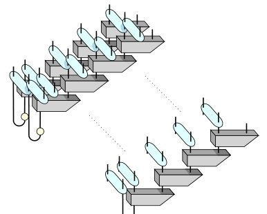
<figcaption class="paper-figure-caption"><b>Fig 1.</b> Figure 7: Visual representation of a two-dimensional sequentially generated state. The figure on the left-hand side shows the MPSs arranged along the rows of the lattice, and the figure on the right-hand side shows the state with the unitaries stacked along the columns of the lattice.</figcaption>
</figure>
<figure class="paper-figure-card">
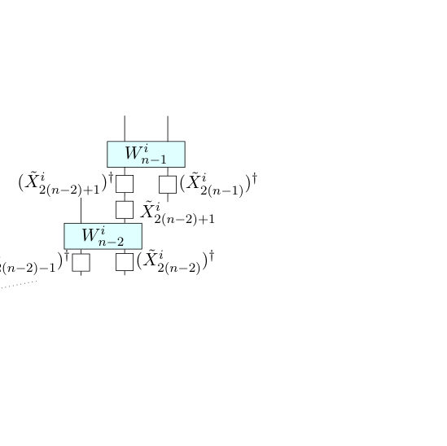
<figcaption class="paper-figure-caption"><b>Fig 2.</b> Figure 8: Visual representation of the action described in Eq. (7.9) for the i-th column of unitaries.</figcaption>
</figure>
<figure class="paper-figure-card">
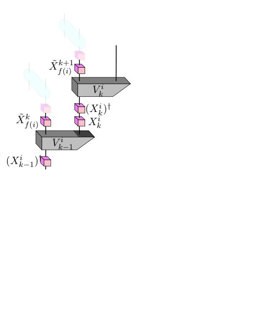
<figcaption class="paper-figure-caption"><b>Fig 3.</b> Figure 10: Visual representation of the action described in Eq. (7.11), for the i-th MPS row. Some faded tensors have been added for reference.</figcaption>
</figure>
<figure class="paper-figure-card">
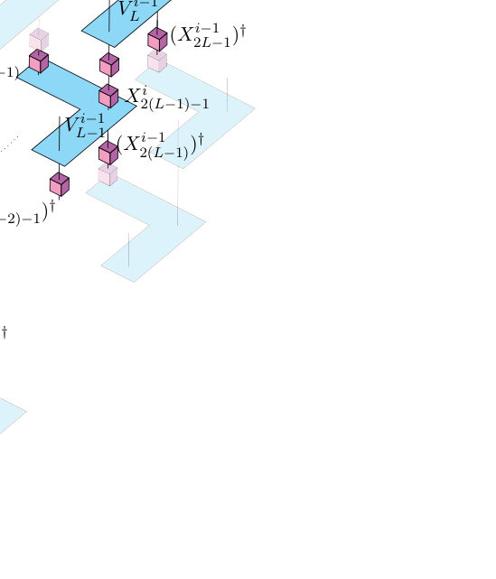
<figcaption class="paper-figure-caption"><b>Fig 4.</b> Figure 13: Visual description of the action on the i-th row of the PEPS, XV i−1.</figcaption>
</figure>
<figure class="paper-figure-card">
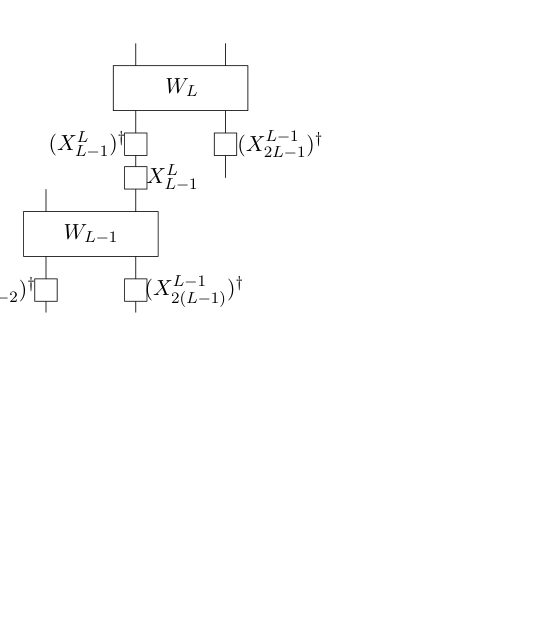
<figcaption class="paper-figure-caption"><b>Fig 5.</b> Figure 14: Visual description of the action on the last row of the PEPS, XW.</figcaption>
</figure>
</div>

<p><strong>Summary.</strong> This paper develops the mathematical framework to treat tensor network representations of quantum states as points on a manifold. By applying advanced differential geometry, it rigorously characterizes the inherent gauge symmetries by showing that the physical state space corresponds to a unique quotient Riemannian manifold. This provides a powerful geometric foundation for analyzing and optimizing these complex many-body quantum descriptions.</p>
<p><strong>Why it may be interesting.</strong> This work provides rigorous mathematical tools—geometric invariants like Riemannian metrics on quotient spaces—to analyze and compare different numerical representations of quantum states derived from tensor networks, which is crucial for developing stable optimization algorithms.</p>
<details>
<summary>Detailed structure</summary>
<p><strong>Main problem.</strong> The core problem is mathematically characterizing the redundancy (gauge freedom) inherent in representing quantum states or circuits using tensor networks.</p>
<p><strong>Main result.</strong> The authors establish a Riemannian fundamental theorem by showing that the physical state space can be identified with a quotient manifold derived from the full tensor network manifold via a Riemannian submersion.</p>
<p><strong>Method.</strong> The work employs advanced differential geometry, specifically utilizing concepts like group actions, Riemannian submersions, and isometric group actions to map the redundant parameter space onto a unique, geometrically defined quotient manifold.</p>
<p><strong>Model / system.</strong> The model is general tensor networks (e.g., MPS, PEPS) used to represent high-dimensional quantum states or depth-two quantum circuits. The mathematical framework involves endowing these network structures with Riemannian manifold metrics.</p>
<p><strong>Key observables.</strong> Gauge freedom, the resulting quotient tensor network manifold structure ($\mathcal{B}$), and the metric tensors defining this geometry.</p>
<p><strong>Important parameters / regimes.</strong> Bond dimension ($D$), physical dimension ($d$), and the number of layers/gates in the circuit representation.</p>
<p><strong>Assumptions / limitations.</strong> The analysis relies heavily on assuming that certain tensor components are full-rank, which allows for the application of Riemannian submersion theorems derived from isometric group actions.</p>
<p><strong>Figures summary.</strong> Figures illustrate various tensor network structures (V1 to V6) and visualize the projection process: $    ext{Manifold}   o   ext{Quotient Manifold}$ using diagrams showing gauge action on different circuit types (e.g., Figure 2, Figure 3).</p>
<p><strong>Paper structure.</strong> The paper builds from general geometric prerequisites (Riemannian submersions and group actions) to defining the tensor network manifold structure for specific families (MPS, PEPS), culminating in proving that gauge freedom allows for a unique quotient space characterized by a Riemannian submersion.</p>
</details>
<details>
<summary>Abstract</summary>
<p>Tensor networks provide a powerful framework for efficiently representing high-dimensional data and many-body quantum states. Endowing tensor networks with a Riemannian manifold structure provides a natural setting for numerical optimization and analysis. A central feature of tensor networks is their gauge freedom, whose characterisation (captured by so-called fundamental theorems) underlies both their intrinsic structure and the design of numerical algorithms. In this work, we study the interaction between the Riemannian manifold structure and the gauge freedom for several families of tensor networks. Using group actions and Riemannian submersions, we establish a Riemannian fundamental theorem for the tensor network families studied.</p>
</details>
<p><sub><a href="#top">↑ back to top</a></sub></p>

<p><a id="paper-2606.13824"></a></p>
<h3 id="calibrated-helstrom-geometry-on-the-bloch-ball-via-connes-spectral-distance"><a href="http://arxiv.org/abs/2606.13824v1">Calibrated Helstrom geometry on the Bloch ball via Connes spectral distance</a></h3>
<p><strong>Authors:</strong> Kaushlendra Kumar<br>
<strong>Type:</strong> theory · <strong>Category:</strong> quantum information and computing · <strong>PDF:</strong> <a href="https://arxiv.org/pdf/2606.13824v1">https://arxiv.org/pdf/2606.13824v1</a><br>
<strong>Analysis basis:</strong> full PDF text, analyzed in chunks
<strong>Topic relevance:</strong> <code>entanglement &amp; information structure</code> <strong>1/5</strong></p>
<div class="figure-strip-hint">↔ Scroll figures horizontally</div>
<div class="paper-figures-scroll">
<figure class="paper-figure-card">
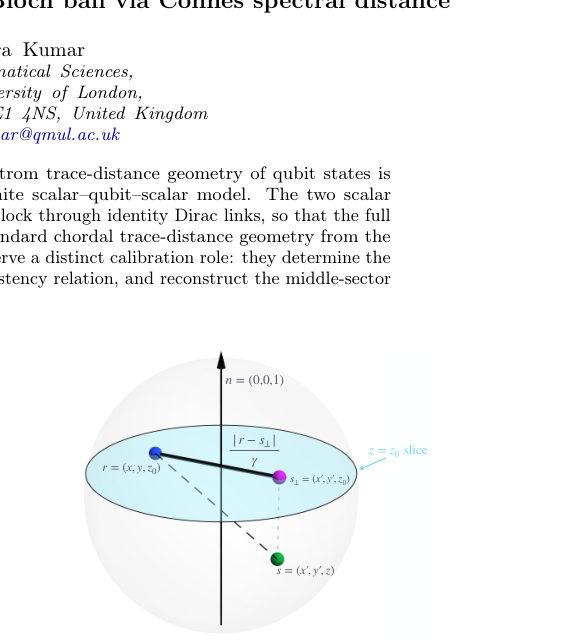
<figcaption class="paper-figure-caption"><b>Fig 1.</b> FIG. 1. Depiction of bare M2(C) finite-slice obstruction. In co- ordinates with Dirac axis n = (0, 0, 1), the bare two-eigenvalue Dirac operator controls only directions transverse to n. Points in the same slice z = z0 have finite distance |r −s⊥|/γ, where γ = |d+ −d−| is the Dirac eigenvalue gap. Any off-slice sep- aration contains an unconstrained component parallel to n, and the corresponding bare spectral distance is infinite.</figcaption>
</figure>
<figure class="paper-figure-card">
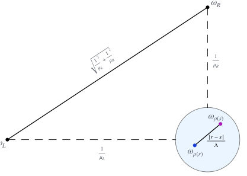
<figcaption class="paper-figure-caption"><b>Fig 2.</b> FIG. 2. Scalar-anchored calibration geometry. The scalar states ωL, ωR define link lengths ℓL = µ−1 L , ℓR = µ−1 R , with d(ωL, ωR)2 = ℓ2 L + ℓ2 R. Inside the qubit block, the middle- sector distance is the calibrated chord d(ωρ(r), ωρ(s)) = Λ−1|r −s|.</figcaption>
</figure>
</div>

<p><strong>Summary.</strong> The paper demonstrates that the standard trace distance metric used for quantifying distinguishability between qubit states can be rigorously recovered from the Connes spectral distance by embedding the system into an extended 'scalar-qubit-scalar' model. This establishes a deep, quantifiable link between noncommutative geometry and quantum information theory metrics. The result is crucial because it shows how geometric structures derived from spectral analysis can precisely predict operational limits in quantum measurement.</p>
<p><strong>Why it may be interesting.</strong> This work provides a powerful geometric framework connecting abstract mathematical tools (spectral triples/Connes distance) directly to fundamental physical quantities in quantum information theory (trace distance). It suggests that operational metrics can be derived from underlying spectral structures, which is highly relevant for theoretical physics exploring quantization procedures.</p>
<details>
<summary>Detailed structure</summary>
<p><strong>Main problem.</strong> The research aims to determine if the standard operational metric for qubit state discrimination, the trace distance, can be mathematically recovered from the Connes spectral distance within a finite noncommutative model.</p>
<p><strong>Main result.</strong> The equal-prior Helstrom trace-distance geometry of qubit states is successfully recovered from the Connes spectral distance via a calibrated relationship involving a scale factor $\Lambda$. This establishes a deep connection between non-commutative geometry and quantum information theory metrics.</p>
<p><strong>Method.</strong> The authors employ techniques from noncommutative geometry, specifically calculating the Connes spectral distance using a Dirac operator on an extended algebra incorporating scalar reference sectors. They derive relationships by optimizing over these auxiliary variables to match known quantum metrics.</p>
<p><strong>Model / system.</strong> The system models qubit states ($
ho$) living on the Bloch ball, which is embedded into a larger structure comprising two scalar reference sectors ($C_L, C_R$) coupled isotropically to the qubit block ($M_2(\mathbb{C})$). This 'scalar-qubit-scalar' model extends the geometry beyond what the bare qubit algebra can capture.</p>
<p><strong>Key observables.</strong> Trace distance $T(
ho, \sigma)$, Connes spectral distance $d_D(\varphi, \psi)$, and the optimal success probability $    ext{p}_{    ext{succ}}(
ho, \sigma)$.</p>
<p><strong>Important parameters / regimes.</strong> The coupling strengths ($\mu_L, \mu_R$) defining the scalar link lengths ($\ell_L, \ell_R$), which determine the overall calibration scale $\Lambda = (\mu_L^2 + \mu_R^2)^{1/2}$.</p>
<p><strong>Assumptions / limitations.</strong> The analysis is restricted to the equal-prior case and relies on extending the qubit algebra with two scalar reference sectors to ensure the full Bloch ball geometry is captured.</p>
<p><strong>Figures summary.</strong> Figure 1 illustrates the necessity of the scalar-anchored model by showing limitations in the bare $M_2(\mathbb{C})$ setting. Figure 2 visually represents the calibrated geometry, detailing how the overall distance relates to individual link strengths ($\ell_L, \ell_R$) and the middle-sector distance.</p>
<p><strong>Paper structure.</strong> The paper progresses by first establishing the failure of simpler models (Figure 1), then introducing the scalar-anchored model to derive key distance formulas relating spectral metrics to trace distances (Theorem III.1). Subsequent sections refine this calibration, deriving specific relationships for different types of state pairs and confirming consistency relations like the Pythagorean theorem in the scalar sectors.</p>
</details>
<details>
<summary>Abstract</summary>
<p>We show that the equal-prior Helstrom trace-distance geometry of qubit states is recovered from Connes spectral distance in a finite scalar-qubit-scalar model. The two scalar reference sectors couple isotropically to the qubit block through identity Dirac links, so that the full Bloch ball, including mixed states, inherits its standard chordal trace-distance geometry from the finite spectral metric. The scalar-sector distances serve a distinct calibration role: they determine the individual link lengths, satisfy a Pythagorean consistency relation, and reconstruct the middle-sector scale.</p>
</details>
<p><sub><a href="#top">↑ back to top</a></sub></p>

<p><a id="paper-2606.14253"></a></p>
<h3 id="quantum-codes-and-optimal-pure-quantum-math717math-lrcs-via-the-mp-construction"><a href="http://arxiv.org/abs/2606.14253v1">Quantum codes and optimal pure quantum $(r,δ)$-LRCs via the MP construction</a></h3>
<p><strong>Authors:</strong> Meng Cao, Kun Zhou<br>
<strong>Type:</strong> theory · <strong>Category:</strong> quantum information and computing · <strong>PDF:</strong> <a href="https://arxiv.org/pdf/2606.14253v1">https://arxiv.org/pdf/2606.14253v1</a><br>
<strong>Analysis basis:</strong> full PDF text, analyzed in chunks
<strong>Topic relevance:</strong> <code>methods for driven-dissipative</code> <strong>1/5</strong></p>
<div class="figure-strip-hint">↔ Scroll figures horizontally</div>
<div class="paper-figures-scroll">
<figure class="paper-figure-card">
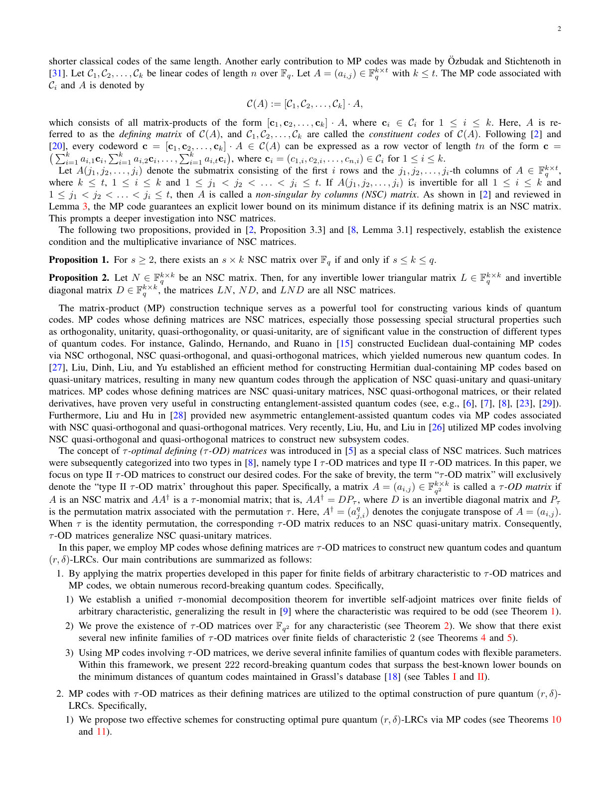
<figcaption class="paper-figure-caption"><b>Fig 1.</b> Low-resolution page preview, page 2</figcaption>
</figure>
<figure class="paper-figure-card">
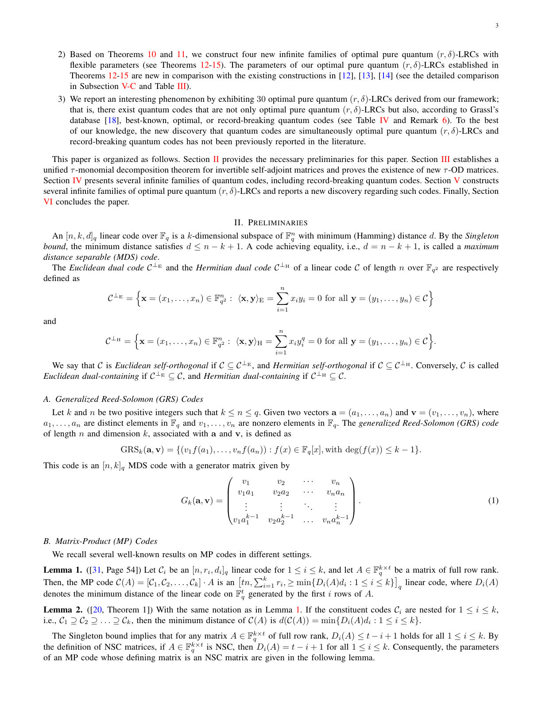
<figcaption class="paper-figure-caption"><b>Fig 2.</b> Low-resolution page preview, page 3</figcaption>
</figure>
<figure class="paper-figure-card">
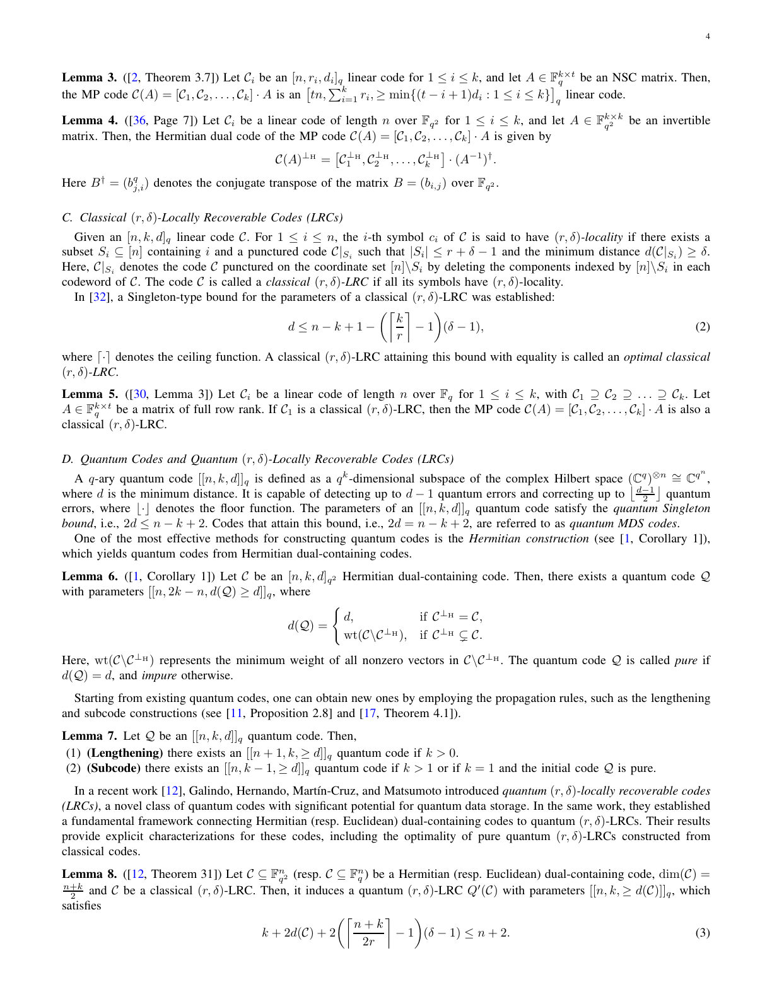
<figcaption class="paper-figure-caption"><b>Fig 3.</b> Low-resolution page preview, page 4</figcaption>
</figure>
<figure class="paper-figure-card">
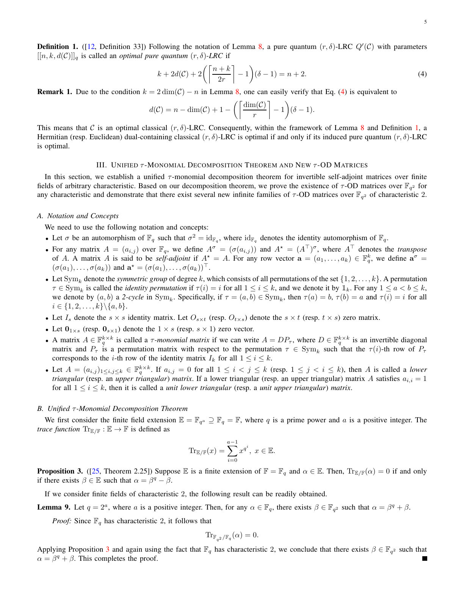
<figcaption class="paper-figure-caption"><b>Fig 4.</b> Low-resolution page preview, page 5</figcaption>
</figure>
<figure class="paper-figure-card">
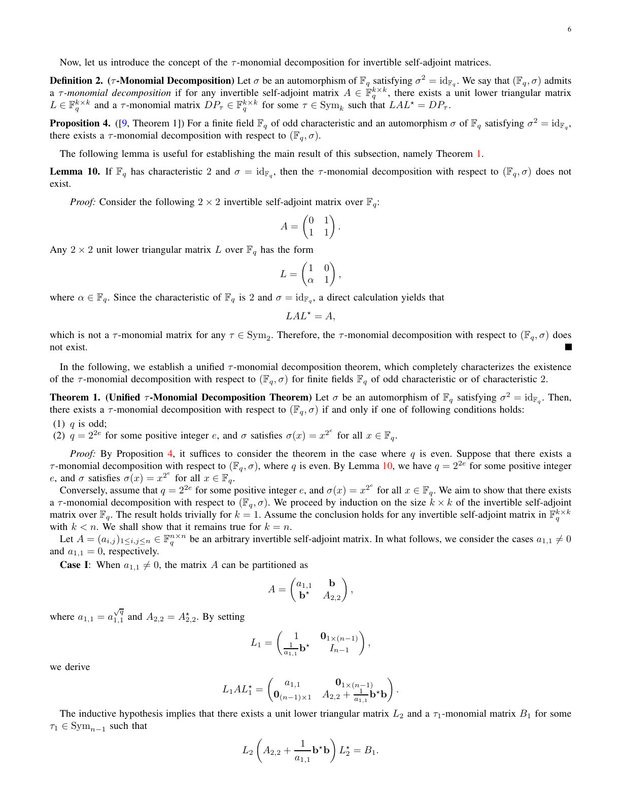
<figcaption class="paper-figure-caption"><b>Fig 5.</b> Low-resolution page preview, page 6</figcaption>
</figure>
</div>

<p><strong>Summary.</strong> This paper develops advanced algebraic tools by proving a unified $\tau$-monomial decomposition theorem for matrices over finite fields. It applies these tools to construct numerous new infinite families of optimal pure quantum $(r, \delta)$-LRCs using the Matrix-Product code framework. The results yield record-breaking quantum codes and establish novel connections between classical locality properties and quantum error correction bounds.</p>
<p><strong>Why it may be interesting.</strong> This work provides deep connections between abstract algebra (matrix decompositions over finite fields) and the concrete bounds on quantum error-correcting capabilities, which is fundamental for designing robust quantum computation protocols.</p>
<details>
<summary>Detailed structure</summary>
<p><strong>Main problem.</strong> The primary goal is constructing new quantum error-correcting codes, specifically optimal pure quantum (r, delta)-Locally Recoverable Codes (LRCs).</p>
<p><strong>Main result.</strong> The authors established a unified $\tau$-monomial decomposition theorem and constructed multiple new infinite families of such LRCs, including 30 instances that are simultaneously optimal, best-known, and record-breaking.</p>
<p><strong>Method.</strong> The work heavily relies on the Matrix-Product (MP) construction method using specialized defining matrices called $\tau$-optimal defining ($\tau$-OD) matrices derived from algebraic theorems over finite fields.</p>
<p><strong>Model / system.</strong> The model is quantum error correction, dealing with quantum states encoded in subspaces of $(\mathbb{C}^q)^{\otimes n}$. The construction links the properties of classical linear codes (like $(r, \delta)$-LRCs) to their quantum counterparts via MP codes.</p>
<p><strong>Key observables.</strong> Quantum code parameters $[[n, k, d]]_q$, and the locality/recovery parameters $(r, \delta)$ for LRCs.</p>
<p><strong>Important parameters / regimes.</strong> The field characteristic (odd vs. even), the size of the finite field $\mathbb{F}_{q^2}$, and various indices ($k_1, k_2, l_1, l_2$) governing code lengths and dimensions.</p>
<p><strong>Assumptions / limitations.</strong> The existence of specific algebraic structures, such as invertible self-adjoint matrices admitting a $\tau$-monomial decomposition, is crucial for the construction theorems to hold.</p>
<p><strong>Figures summary.</strong> References are made to Tables I, II, III, and IV, which provide detailed numerical comparisons showing that the newly constructed codes surpass existing records in Grassl's database regarding minimum distance $d$.</p>
<p><strong>Paper structure.</strong> The paper progresses from establishing foundational algebraic theorems (the unified $\tau$-monomial decomposition theorem) to applying these results to construct infinite families of quantum codes, and finally specializing these constructions to yield optimal pure quantum $(r, \delta)$-LRCs.</p>
</details>
<details>
<summary>Abstract</summary>
<p>In this paper, we employ MP codes whose defining matrices are $τ$-optimal defining ($τ$-OD) matrices to construct new quantum codes and quantum $(r,δ)$-LRCs. Specifically, we report the following results: We establish a unified $τ$-monomial decomposition theorem for invertible self-adjoint matrices over finite fields of arbitrary characteristic, which generalizes the result in "Quantum codes using the $τ$-OD MP construction" where the characteristic was required to be odd. Based on this theorem, we prove the existence of $τ$-OD matrices over $\mathbb{F}_{q^2}$ for any characteristic and demonstrate that there exist several new infinite families of $τ$-OD matrices over $\mathbb{F}_{q^2}$ of characteristic $2$. As an application of MP codes involving $τ$-OD matrices, we construct several infinite families of quantum codes with flexible parameters. Within this framework, we present $222$ record-breaking quantum codes that surpass the best-known records maintained in Grassl's database.   We propose two effective schemes for constructing optimal pure quantum $(r,δ)$-LRCs via MP codes. Accordingly, we construct four new infinite families of optimal pure quantum $(r,δ)$-LRCs with flexible parameters. Notably, we report an interesting phenomenon by exhibiting $30$ optimal pure quantum $(r,δ)$-LRCs derived from our framework; that is, there exist quantum codes that are not only optimal pure quantum $(r,δ)$-LRCs but also, according to Grassl's database, best-known, optimal, or record-breaking quantum codes. To the best of our knowledge, the new discovery that quantum codes are simultaneously optimal pure quantum $(r,δ)$-LRCs and record-breaking quantum codes has not been previously reported in the literature.</p>
</details>
<p><sub><a href="#top">↑ back to top</a></sub></p>

<p><a id="paper-2606.14484"></a></p>
<h3 id="quantum-horizon-an-evaluation-of-quantum-computing-as-a-threat-to-bitcoin-and-ethereum"><a href="http://arxiv.org/abs/2606.14484v1">Quantum Horizon: An evaluation of quantum computing as a threat to Bitcoin and Ethereum</a></h3>
<p><strong>Authors:</strong> Iosif M. Gershteyn, Jacob A. Alber<br>
<strong>Type:</strong> theory · <strong>Category:</strong> quantum information and computing · <strong>PDF:</strong> <a href="https://arxiv.org/pdf/2606.14484v1">https://arxiv.org/pdf/2606.14484v1</a><br>
<strong>Analysis basis:</strong> full PDF text, analyzed in chunks
<strong>Topic relevance:</strong> <code>methods for driven-dissipative</code> <strong>1/5</strong></p>
<div class="figure-strip-hint">↔ Scroll figures horizontally</div>
<div class="paper-figures-scroll">
<figure class="paper-figure-card">
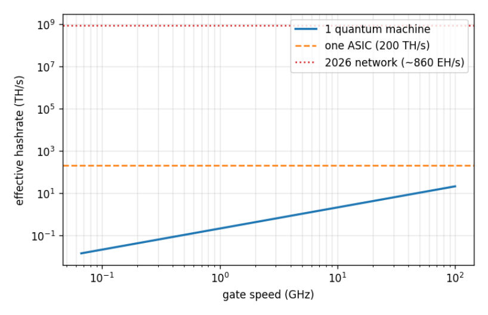
<figcaption class="paper-figure-caption"><b>Fig 1.</b> Figure 1. Effective quantum “hashrate” versus gate speed, compared with one ASIC and the whole 2026 network.</figcaption>
</figure>
<figure class="paper-figure-card">
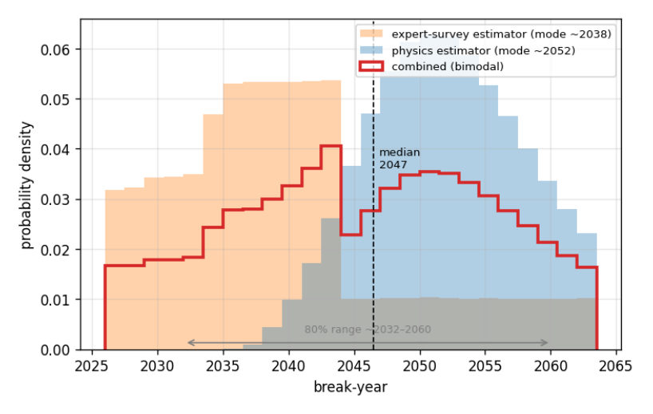
<figcaption class="paper-figure-caption"><b>Fig 2.</b> Figure 2. The two estimators (survey and physics) and the bimodal combined distribution; the median falls in the trough between the modes.</figcaption>
</figure>
<figure class="paper-figure-card">
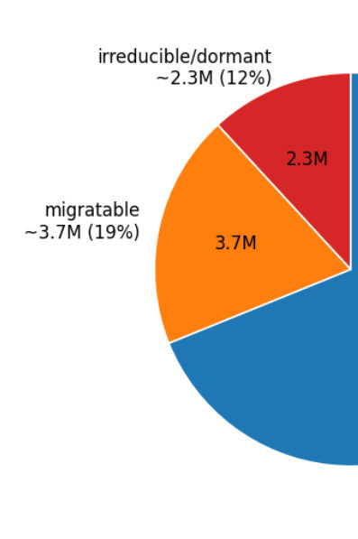
<figcaption class="paper-figure-caption"><b>Fig 3.</b> Figure 3. Bitcoin’s supply split into permanently-at-risk, migratable, and protected coins.</figcaption>
</figure>
<figure class="paper-figure-card">
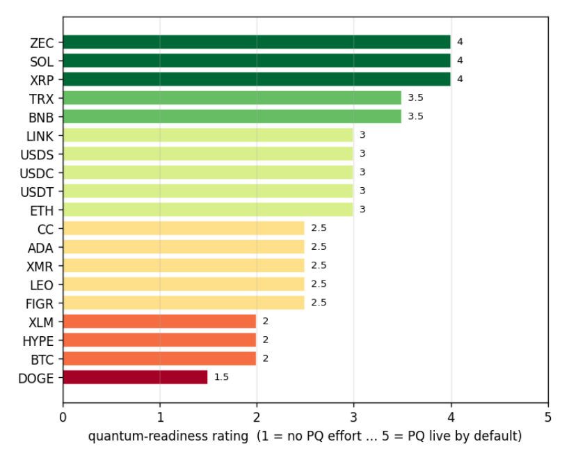
<figcaption class="paper-figure-caption"><b>Fig 4.</b> Figure 5. Top-20 quantum-readiness ratings; none is fully post-quantum (RAIN excluded; its host chain could not be verified).</figcaption>
</figure>
<figure class="paper-figure-card">
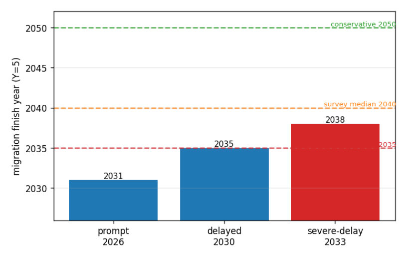
<figcaption class="paper-figure-caption"><b>Fig 5.</b> Figure 4. When migration finishes versus when a quantum computer might arrive, across start-time and adoption scenarios.</figcaption>
</figure>
</div>

<p><strong>Summary.</strong> This work assesses the threat of quantum computers to Bitcoin and Ethereum, concluding that Shor's algorithm breaks signatures but mining remains relatively safe. The authors forecast a probabilistic arrival of a CRQC and argue that while the risk is real, it is largely mitigable through proactive governance and migration efforts.</p>
<p><strong>Why it may be interesting.</strong> While not directly about AMO physics, the paper uses complex modeling techniques (Monte Carlo) to assess technological risk against fundamental quantum computing capabilities (Shor's algorithm), which is highly relevant to understanding the limits of current information security paradigms.</p>
<details>
<summary>Detailed structure</summary>
<p><strong>Main problem.</strong> The paper evaluates the threat posed by quantum computers, specifically Shor's algorithm, to the elliptic-curve digital signatures used by Bitcoin and Ethereum.</p>
<p><strong>Main result.</strong> While a cryptographically relevant quantum computer (CRQC) poses a real threat via signature breaking, the risk is bounded because many assets are migratable, making governance, not technology, the primary constraint.</p>
<p><strong>Method.</strong> The authors combine Monte-Carlo forecasting with physical qubit scaling models and expert surveys to predict CRQC arrival timelines. They also use simulation models for on-chain attack success rates.</p>
<p><strong>Model / system.</strong> The analysis focuses on cryptographic primitives (ECDSA, BLS) securing cryptocurrencies like Bitcoin and Ethereum. The threat is modeled against the required logical qubit count needed to run Shor's algorithm.</p>
<p><strong>Key observables.</strong> CRQC arrival odds (e.g., 30% by 2040), number of irreducibly at-risk BTC coins ($\sim 2.3$ million), and percentage of exposed ETH ($50–65\%$).</p>
<p><strong>Important parameters / regimes.</strong> Required logical qubits for breaking secp256k1 ($\sim 1,200–2,330$), quadratic speedup from Grover's algorithm, and the time required for governance action.</p>
<p><strong>Assumptions / limitations.</strong> The threat is contingent on fault-tolerant hardware; the forecast uses a bimodal distribution combining physics scaling with expert opinion; migration feasibility depends on community coordination.</p>
<p><strong>Figures summary.</strong> Figures illustrate Bitcoin's supply split into permanently-at-risk, migratable, and protected coins. Other figures compare quantum 'hashrate' vs. network hashrate and show the combined bimodal distribution for CRQC timing.</p>
<p><strong>Paper structure.</strong> The paper first distinguishes between Shor's (signature threat) and Grover's (mining threat). It then models the hardware scaling to forecast CRQC arrival, analyzes the specific exposure of BTC and ETH supply, and concludes by emphasizing that governance dictates the timeline for mitigation.</p>
</details>
<details>
<summary>Abstract</summary>
<p>Quantum computing poses a real, broad-based, but bounded and substantially mitigable threat to Bitcoin and Ethereum. We separate the two quantum algorithms that public discussion routinely conflates: Shor's algorithm breaks the elliptic-curve signatures (ECDSA over secp256k1, BLS over BLS12-381) that authorize spending, whereas Grover's algorithm does not meaningfully threaten proof-of-work mining, which is protected by a merely quadratic speedup, fault-tolerant per-operation costs, a square-root parallelization wall, and difficulty adjustment. Folding hardware scaling, the falling resource requirement, a fault-tolerance readiness lag, and expert surveys into a single Monte-Carlo forecast yields a wide, bimodal arrival distribution for a cryptographically relevant quantum computer: about a one-in-six chance by 2035, near 30% by 2040, and about 60% by 2050. Exposure is concentrated and mostly migratable: of Bitcoin's roughly six million quantum-exposed coins only about 2.3 million are irreducibly at risk, while 50 to 65% of Ether sits at key-revealed accounts that can adopt post-quantum signatures. A timely migration beats even an optimistic 2035 machine, so the binding constraint is governance, not technology. A survey of the top twenty cryptocurrencies finds none fully post-quantum. Reproducible models accompany every quantitative claim.</p>
</details>
<p><sub><a href="#top">↑ back to top</a></sub></p>

<p><a id="paper-2606.14677"></a></p>
<h3 id="quasilinear-equivalence-checking-for-detector-error-models"><a href="http://arxiv.org/abs/2606.14677v1">Quasilinear Equivalence Checking for Detector Error Models</a></h3>
<p><strong>Authors:</strong> Mathys Rennela<br>
<strong>Type:</strong> theory · <strong>Category:</strong> quantum information and computing · <strong>PDF:</strong> <a href="https://arxiv.org/pdf/2606.14677v1">https://arxiv.org/pdf/2606.14677v1</a><br>
<strong>Analysis basis:</strong> full PDF text, analyzed in chunks
<strong>Topic relevance:</strong> <code>quantum measurements</code> <strong>1/5</strong></p>
<div class="figure-strip-hint">↔ Scroll figures horizontally</div>
<div class="paper-figures-scroll">
<figure class="paper-figure-card">
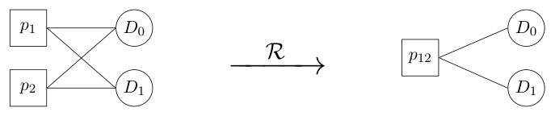
<figcaption class="paper-figure-caption"><b>Fig 1.</b> Figure 2: Tanner graph reduction using rewriting rules R. Error mechanisms with identical targets are fused together algebraically via p12 = p1 ⊕p2 (Rule R1).</figcaption>
</figure>
</div>

<p><strong>Summary.</strong> This paper develops a formal, algebraic theory for Detector Error Models (DEMs), which are used to characterize noise in quantum circuits. It introduces an efficient rewriting system that guarantees a unique normal form for any DEM term. This allows researchers to create the first static decision procedure to rigorously check if two different error descriptions represent the same underlying physical fault model.</p>
<p><strong>Why it may be interesting.</strong> This work provides foundational mathematical tools for verifying quantum computation correctness by providing rigorous methods to compare complex noise models derived from physical hardware constraints.</p>
<details>
<summary>Detailed structure</summary>
<p><strong>Main problem.</strong> The core problem is developing a complete, decidable mathematical theory for Detector Error Models (DEMs) to rigorously check if two different descriptions of quantum hardware noise are equivalent.</p>
<p><strong>Main result.</strong> The authors provide an efficient quasilinear time decision procedure based on computing a unique normal form derived from the DEM structure via rewriting systems and Tanner graphs. This establishes structural equivalence for non-adaptive QEC pipelines and provides sound procedures for partially-adaptive circuits.</p>
<p><strong>Method.</strong> The methodology involves constructing an equational theory for DEMs, defining a confluent rewriting system (PROP), and characterizing equivalence by comparing unique normal forms derived from the structure's invariants (Tanner graphs).</p>
<p><strong>Model / system.</strong> The model is the Detector Error Model (DEM), which formally describes physical error mechanisms in quantum circuits. These errors are characterized by probabilities, specific detectors triggered, and logical observables flipped during a fault event.</p>
<p><strong>Key observables.</strong> Detector outcomes ($\{0, 1\}^D$), observable outcomes ($\{0, 1\}^O$), and the associated probability distributions (scope distribution $\mu$).</p>
<p><strong>Important parameters / regimes.</strong> Error probabilities ($p < 0.5$); circuit depth/size ($|E|$); scope structure (Skeleton $
ho(t)$).</p>
<p><strong>Assumptions / limitations.</strong> The initial analysis assumes detector indices are absolute; later work addresses the limitations of assuming observable-separation for full decoder-equivalence in adaptive circuits.</p>
<p><strong>Figures summary.</strong> Figures illustrate Tanner graph reduction, showing how error mechanisms with identical targets are fused algebraically using probability combination rules (e.g., $p_{12} = p_1 \oplus p_2$).</p>
<p><strong>Paper structure.</strong> The paper builds from defining the DEM structure and its algebraic theory to proving the existence of a unique normal form via rewriting systems, establishing invariants using Tanner graphs, and finally developing increasingly general decision procedures for equivalence (scope-local vs. full decoder-equivalence) applicable to adaptive QEC.</p>
</details>
<details>
<summary>Abstract</summary>
<p>A Detector Error Model (DEM) is a structured representation of error mechanisms in quantum circuits, which has gained popularity in quantum compilation pipelines for its ability to capture fault-tolerance at a circuit level. It lists error mechanisms as instructions targeting detectors and observables, specifying for each physical fault channel the probability that the fault fires, the detectors it triggers, and the observables it flips.   In this paper, we develop an equational theory for DEMs, with its associated categorical semantics. We present a sound, terminating, confluent rewriting system for DEM terms, formulating it as a symmetric monoidal theory (a PROP) over the Giry monad. We prove that every DEM term has a unique normal form, which can be computed efficiently in quasilinear time $O(k|E|\log|E|)$, where $|E|$ is the number of instructions and $k$ bounds the size of a target set. This provides a complete set of invariants (via Tanner graphs) for structural DEM equivalence. We provide the first static decision procedure for DEM equivalence, with rigorous correctness guarantees. It is complete (decides full decoder-equivalence exactly) for non-adaptive quantum error correction (QEC) pipelines, and scales to a sound and applicable decision procedure for partially-adaptive circuits (lattice surgery, distributed QEC, ...) without suffering exponential overhead. We discuss its application to the verification and optimisation of quantum compilers.</p>
</details>
<p><sub><a href="#top">↑ back to top</a></sub></p>
<h2 id="other-papers-5">Other papers (5)</h2>
<p><em>Papers from primary archives without highlighted authors or any topic match. Click to expand.</em></p>
<details>
<summary>Show other papers</summary>

<p><a id="paper-2606.13811"></a></p>
<h3 id="aligning-quantum-operators-with-large-language-models"><a href="http://arxiv.org/abs/2606.13811v1">Aligning Quantum Operators with Large Language Models</a></h3>
<p><strong>Authors:</strong> Rogerio Feris, Yunchao Liu, Pengyuan Li, Hang Hua, David Kremer<br>
<strong>Type:</strong> theory · <strong>Category:</strong> quantum information and computing · <strong>PDF:</strong> <a href="https://arxiv.org/pdf/2606.13811v1">https://arxiv.org/pdf/2606.13811v1</a><br>
<strong>Analysis basis:</strong> full PDF text, analyzed in chunks</p>
<div class="figure-strip-hint">↔ Scroll figures horizontally</div>
<div class="paper-figures-scroll">
<figure class="paper-figure-card">
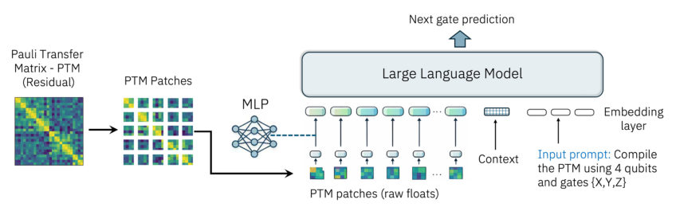
<figcaption class="paper-figure-caption"><b>Fig 1.</b> Fig. 1. Overview of our approach. A target unitary U is converted to its Pauli Transfer Matrix (PTM), which is partitioned into non-overlapping patches and encoded by a lightweight encoder. An MLP projector maps the resulting patch embeddings into the token space of a pretrained LLM, where they are concatenated with text embeddings from the context (current fidelity and previous gates) and an instruction prompt. The LLM autoregressively generates a sequence of Pauli rotation gates (e.g., IYYZ, ZIII) that compile the target unitary. At each synthesis step, the residual PTM is re-encoded and fed back as a new visual input, enabling the model to condition each gate prediction on the remaining...</figcaption>
</figure>
<figure class="paper-figure-card">
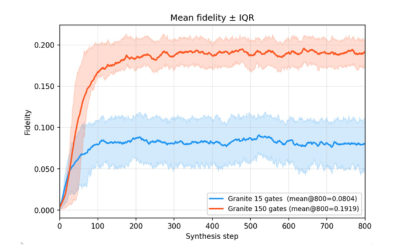
<figcaption class="paper-figure-caption"><b>Fig 2.</b> Fig. 3. Fidelity over 800 synthesis steps on 200 Haar-random 4-qubit unitaries. The 150g model achieves substantially higher fidelity than the 15g model, suggesting that training on longer circuits improves generalization to arbitrary unitaries.</figcaption>
</figure>
<figure class="paper-figure-card">
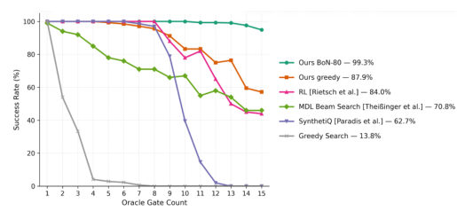
<figcaption class="paper-figure-caption"><b>Fig 3.</b> Fig. 2. Per-gate success rate on 2,000 held-out circuits (1–15 gates, fidelity threshold τ = 0.999). RL and MDL beam search results are taken from their respective publications as approximate comparisons (see text). Overall weighted success rates shown in the legend.</figcaption>
</figure>
<figure class="paper-figure-card">
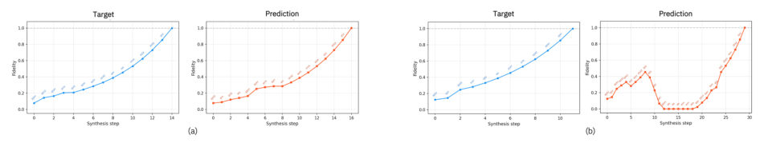
<figcaption class="paper-figure-caption"><b>Fig 4.</b> Fig. 4. Fidelity traces for training oracle sequences and model predictions at test time. The model’s predictions generalize beyond the training data, most strikingly in (b), where fidelity rises, then drops, and finally recovers to 1.0.</figcaption>
</figure>
<figure class="paper-figure-card">
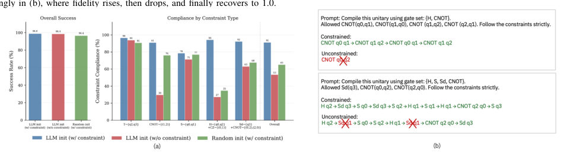
<figcaption class="paper-figure-caption"><b>Fig 5.</b> Fig. 5. Text-conditioned synthesis on unseen constraint configurations. (a) Overall success rate (similar for the three settings) and gate-level constraint compliance per constraint type. The large drop when removing constraint text from the prompt confirms that the model actively conditions on the instruction rather than producing compliant outputs by default, while the gap between LLM and random initialization shows that pretrained language understanding is critical for interpreting unseen placement constraints. (b) Qualitative examples for constrained and unconstrained prompts.</figcaption>
</figure>
</div>
<p><strong>Summary.</strong> The paper addresses the challenge of making Large Language Models understand quantum mechanics by mapping unitary operators into the LLM's latent space. It introduces an autoregressive synthesis method that predicts quantum gates sequentially, conditioned on both the current state (via PTM) and natural language instructions. This approach significantly outperforms existing quantum compilation methods, suggesting a path toward quantum-aware foundation models.</p>
<p><strong>Why it may be interesting.</strong> This work is highly relevant because it proposes a novel paradigm for integrating symbolic reasoning (LLMs) with structured physical computation (quantum circuits), potentially leading to automated discovery or optimization tools for quantum algorithms.</p>
<details>
<summary>Detailed structure</summary>
<p><strong>Main problem.</strong> The core problem is bridging the gap between Large Language Models (LLMs), which are inherently blind to quantum representations like unitary matrices, and the need for them to reason about these operations.</p>
<p><strong>Main result.</strong> The proposed multimodal alignment framework successfully enables language-conditioned synthesis of quantum circuits, achieving state-of-the-art performance competitive with complex baselines across various circuit lengths.</p>
<p><strong>Method.</strong> The authors map unitary operators (represented as Pauli Transfer Matrices) into the LLM's latent space using a lightweight encoder and projector. Synthesis is performed autoregressively by predicting one gate at a time based on the residual PTM state, conditioned on both visual (PTM) and textual inputs.</p>
<p><strong>Model / system.</strong> The system involves synthesizing quantum unitaries ($U$) for Clifford+T circuits over a Pauli rotation gate set. The representation used is the real-valued Pauli Transfer Matrix (PTM), which captures the unitary transformation in a matrix form suitable for embedding into an LLM.</p>
<p><strong>Key observables.</strong> Fidelity ($F(P)$) of synthesis progress, defined as $ ext{Tr}(P)/4^n$, where success is marked when $F \ge 0.999$. Success rates and mean fidelity are key comparative metrics against baselines.</p>
<p><strong>Important parameters / regimes.</strong> The size of the system ($n$-qubits), the patch size used for encoding (e.g., $16	imes 16$), and the training data scale (up to 9.2M circuits).</p>
<p><strong>Assumptions / limitations.</strong> The framework assumes that the PTM representation can be effectively projected into the LLM's latent space, allowing the model to treat quantum state evolution as a sequence prediction task.</p>
<p><strong>Figures summary.</strong> Figures illustrate the overall multimodal alignment workflow (U -&gt; PTM -&gt; Encoder -&gt; LLM Input). Other figures compare synthesis success rates and fidelity traces against established baselines like greedy search and RL approaches across varying circuit lengths.</p>
<p><strong>Paper structure.</strong> The paper introduces the problem gap, details the multimodal alignment architecture using PTMs as visual inputs alongside text. It presents results showing superior scaling and performance over existing quantum compilation methods, culminating in demonstrations of language-conditioned synthesis capabilities.</p>
</details>
<details>
<summary>Abstract</summary>
<p>Can Large Language Models (LLMs) understand and reason about quantum operators? Despite their remarkable capabilities in mathematics and symbolic reasoning, LLMs remain inherently blind to quantum representations such as unitary matrices. In this work, we take a step toward bridging this gap by introducing an approach that maps unitary operators into the latent space of an LLM, enabling unified modeling over quantum and linguistic inputs. We instantiate this idea on Clifford+T circuit synthesis over a Pauli rotation gate set, where our model achieves results competitive with state-of-the-art methods and scales consistently with training data, with no signs of saturation. Our approach further enables language-conditioned synthesis, allowing gate constraints unseen during training to be specified directly in natural language. This work suggests a path toward quantum--aware foundation models that can natively interpret and reason about quantum operations, which could have broader implications reaching across quantum compilation and algorithm discovery.</p>
</details>
<p><sub><a href="#top">↑ back to top</a></sub></p>

<p><a id="paper-2606.13928"></a></p>
<h3 id="compact-graphs-and-quantum-automorphisms"><a href="http://arxiv.org/abs/2606.13928v1">Compact graphs and quantum automorphisms</a></h3>
<p><strong>Authors:</strong> Pedro Baptista, Gabriel Coutinho, Chris Godsil, Simon Schmidt<br>
<strong>Type:</strong> theory · <strong>Category:</strong> other · <strong>PDF:</strong> <a href="https://arxiv.org/pdf/2606.13928v1">https://arxiv.org/pdf/2606.13928v1</a><br>
<strong>Analysis basis:</strong> full PDF text, analyzed in chunks</p>
<div class="figure-strip-hint">↔ Scroll figures horizontally</div>
<div class="paper-figures-scroll">
<figure class="paper-figure-card">

<figcaption class="paper-figure-caption"><b>Fig 1.</b> Low-resolution page preview, page 2</figcaption>
</figure>
<figure class="paper-figure-card">

<figcaption class="paper-figure-caption"><b>Fig 2.</b> Low-resolution page preview, page 3</figcaption>
</figure>
<figure class="paper-figure-card">

<figcaption class="paper-figure-caption"><b>Fig 3.</b> Low-resolution page preview, page 4</figcaption>
</figure>
<figure class="paper-figure-card">

<figcaption class="paper-figure-caption"><b>Fig 4.</b> Low-resolution page preview, page 5</figcaption>
</figure>
<figure class="paper-figure-card">

<figcaption class="paper-figure-caption"><b>Fig 5.</b> Low-resolution page preview, page 6</figcaption>
</figure>
</div>
<p><strong>Summary.</strong> This theoretical paper explores a quantum generalization of 'compact graphs' by examining the relationship between classical and quantum automorphism structures. The core finding is that any graph satisfying the quantum definition of compactness must also satisfy the stricter, classical definition. This establishes a deep connection between algebraic symmetry theory and geometric properties of graphs.</p>
<p><strong>Why it may be interesting.</strong> While not directly about AMO systems, the rigorous mathematical framework developed for analyzing symmetries (automorphism groups) using $   ext{C}^*$-algebras and state spaces provides powerful tools applicable to understanding symmetry breaking or structure preservation in complex quantum many-body models.</p>
<details>
<summary>Detailed structure</summary>
<p><strong>Main problem.</strong> The paper aims to establish a quantum analogue of 'compact graphs,' which are classically defined by properties of their fractional automorphism polytope, and determine if this quantum notion is equivalent to the classical one.</p>
<p><strong>Main result.</strong> The natural quantum analogue of compactness is shown to be classical: if the set of quantum fractional automorphisms equals the full fractional automorphism polytope, then the graph must also satisfy the condition for classical compactness.</p>
<p><strong>Method.</strong> The authors use techniques from $   ext{C}^*$-algebras and state space analysis on the quantum automorphism group algebra to define and analyze sets like the quantum fractional automorphism polytope ($ ext{QP}(A)$).</p>
<p><strong>Model / system.</strong> The system under study is an abstract graph $X$ and its associated symmetry structures, including the classical and quantum orbital algebras derived from its automorphism groups.</p>
<p><strong>Key observables.</strong> Quantum fractional automorphism set ($ ext{QP}(A)$), Classical/Fractional Automorphism Polytopes ($P(A)$, $S(A)$), Quantum Orbital Algebra ($    ext{QO}(X)$).</p>
<p><strong>Important parameters / regimes.</strong> Graph structure (e.g., regularity, distance-regularity) and the fundamental magic unitary defining the quantum symmetries.</p>
<p><strong>Assumptions / limitations.</strong> The analysis relies on comparing inclusions between various matrix algebras derived from the automorphism group representations.</p>
<p><strong>Figures summary.</strong> Not specified in the notes; the focus is on algebraic relationships and set inclusions (e.g., $P(A) \subseteq QP(A) \subseteq S(A)$).</p>
<p><strong>Paper structure.</strong> The paper proceeds by defining quantum analogues of classical graph properties, establishing key structural theorems relating these sets ($    ext{QP}(A)$ is closed/convex), and culminating in the main result that quantum compactness implies classical compactness.</p>
</details>
<details>
<summary>Abstract</summary>
<p>Compact graphs are graphs for which the fractional automorphism polytope has no genuinely fractional vertices. This paper proposes a quantum analogue of this idea by evaluating the fundamental magic unitary of the quantum automorphism group on states, which we show to produce a closed convex set of doubly stochastic matrices sitting between the classical automorphism polytope and the full fractional automorphism polytope. Our main result is that the natural quantum analogue of compactness is classical, that is, a quantum compact graph is classically compact.   We also relate this set to the quantum orbital algebra and obtain a hierarchy of classical and quantum compactness pseudo notions. The framework recovers familiar consequences of compactness through commutants and suggests quantum analogues of generous transitivity and distance-transitivity. We also isolate examples and open problems indicating where quantum symmetries may strictly refine the classical compactness theory.</p>
</details>
<p><sub><a href="#top">↑ back to top</a></sub></p>

<p><a id="paper-2606.14447"></a></p>
<h3 id="dealing-with-locality-in-qaoa"><a href="http://arxiv.org/abs/2606.14447v1">Dealing with locality in QAOA</a></h3>
<p><strong>Authors:</strong> Mithilesh Kumar, Yusuf Tahir<br>
<strong>Type:</strong> theory · <strong>Category:</strong> quantum information and computing · <strong>PDF:</strong> <a href="https://arxiv.org/pdf/2606.14447v1">https://arxiv.org/pdf/2606.14447v1</a><br>
<strong>Analysis basis:</strong> full PDF text, analyzed in chunks</p>
<div class="figure-strip-hint">↔ Scroll figures horizontally</div>
<div class="paper-figures-scroll">
<figure class="paper-figure-card">

<figcaption class="paper-figure-caption"><b>Fig 1.</b> FIG. 1. Visual progression of the transport-augmentation algorithm. (a) The original base graph topology subject to the MaxCut cost Hamiltonian. (b)–(h) The modified interaction graph Gint following the iterative injection of shortcut transport couplings. This process sequentially collapses the structural diameter from d = 7 down to d = 1, thereby geometrically rewiring the causal lightcone to overcome depth-dependent locality obstructions without altering the underlying objective function.</figcaption>
</figure>
<figure class="paper-figure-card">

<figcaption class="paper-figure-caption"><b>Fig 2.</b> FIG. 2. Approximation Ratio for 4-regular instances (base diameter 3).</figcaption>
</figure>
<figure class="paper-figure-card">

<figcaption class="paper-figure-caption"><b>Fig 3.</b> FIG. 3. Approximation Ratio for 4-regular instances (base diameter 4).</figcaption>
</figure>
<figure class="paper-figure-card">

<figcaption class="paper-figure-caption"><b>Fig 4.</b> FIG. 4. Approximation Ratio for bipartite instances (base diameter 4).</figcaption>
</figure>
<figure class="paper-figure-card">

<figcaption class="paper-figure-caption"><b>Fig 5.</b> FIG. 5. Approximation Ratio for bipartite instances (base diameter 5).</figcaption>
</figure>
</div>
<p><strong>Summary.</strong> This paper tackles the locality bottleneck in QAOA by proposing a transport-augmented mixer that adds 'shortcut' couplings to the circuit structure. Theoretically, this augmentation collapses the effective interaction graph diameter, which has been shown to remove depth-dependent constraints and significantly boost the algorithm's approximation ratio on sparse graphs.</p>
<p><strong>Why it may be interesting.</strong> The rigorous connection between graph topology (diameter) and quantum algorithm performance at finite depth is highly relevant for designing scalable quantum algorithms that overcome hardware connectivity limitations.</p>
<details>
<summary>Detailed structure</summary>
<p><strong>Main problem.</strong> The primary challenge addressed is the 'locality bottleneck' in shallow-depth QAOA circuits when applied to sparse graphs with high interaction diameters.</p>
<p><strong>Main result.</strong> By augmenting the mixer Hamiltonian with optimized shortcut couplings, the effective interaction graph diameter can be collapsed, leading to a significant and theoretically bounded improvement in the approximation ratio for MaxCut problems.</p>
<p><strong>Method.</strong> The authors use exact finite-depth support recursions and graph theory (diameter augmentation) to prove that reducing the circuit's effective interaction diameter removes depth-dependent locality obstructions.</p>
<p><strong>Model / system.</strong> The model is QAOA applied to finding the ground state of a MaxCut Hamiltonian on an instance graph G. The mixer is augmented by adding 'shortcut' couplings ($E_{new}$) to create a transport-augmented mixer, while the cost Hamiltonian remains fixed.</p>
<p><strong>Key observables.</strong> Approximation Ratio (AR) for MaxCut; the support ($    ext{supp}$) of evolved observables, which is bounded by graph lightcones defined by the interaction diameter.</p>
<p><strong>Important parameters / regimes.</strong> Circuit depth ($p$); base graph diameter ($ ext{diam}(G)$); the effective interaction-graph diameter ($d$).</p>
<p><strong>Assumptions / limitations.</strong> The analysis relies on establishing precise bounds on the support of evolved operators using commutator relations and lightcone criteria, assuming that the primary limitation is purely geometric/topological.</p>
<p><strong>Figures summary.</strong> Figures illustrate the Approximation Ratio for various graph types (bipartite, tree) showing a sharp increase towards unity when the interaction diameter is reduced to 1.</p>
<p><strong>Paper structure.</strong> The paper progresses by first identifying the locality bottleneck based on depth $p$ and graph distance. It then introduces the transport-augmented mixer using shortcut couplings. The core of the work involves deriving theoretical bounds (lightcone criteria) showing how these shortcuts collapse the effective diameter, leading to improved performance metrics.</p>
</details>
<details>
<summary>Abstract</summary>
<p>Shallow-depth QAOA on sparse, high-diameter MaxCut instances faces a locality bottleneck: at depth \(p\), local observables can depend only on a bounded neighborhood of the circuit interaction graph. We propose a transport-augmented QAOA that keeps the MaxCut cost Hamiltonian unchanged but enriches the mixer with optimized, unweighted shortcut couplings (scheduled \(XX+YY\)) to collapse the effective interaction-graph diameter. Using exact finite-depth support recursions, we relate optimal shortcut placement to bounded-diameter graph augmentation, and show in benchmarks that (unlike ma-QAOA) performance becomes effectively size-invariant once the diameter is reduced. For bipartite families (base diameter 4), reducing the interaction path to \(d=1\) raises the ensemble-averaged approximation ratio from 0.7378 (ma-QAOA) to 0.9767 at \(p=1\) (\(σ=0.0251\), nine system sizes); on random trees (base diameter 10), at \(p=2\) it improves from 0.9226 to 0.9997 (\(σ=0.0001\)).</p>
</details>
<p><sub><a href="#top">↑ back to top</a></sub></p>

<p><a id="paper-2606.14206"></a></p>
<h3 id="fourier-analysis-of-quantum-neural-network-with-non-linear-data-embedding"><a href="http://arxiv.org/abs/2606.14206v1">Fourier analysis of quantum neural network with non-linear data embedding</a></h3>
<p><strong>Authors:</strong> Haiyue Kang, Martin Sevior, Muhammad Usman<br>
<strong>Type:</strong> theory · <strong>Category:</strong> quantum information and computing · <strong>PDF:</strong> <a href="https://arxiv.org/pdf/2606.14206v1">https://arxiv.org/pdf/2606.14206v1</a><br>
<strong>Analysis basis:</strong> full PDF text, analyzed in chunks</p>
<div class="figure-strip-hint">↔ Scroll figures horizontally</div>
<div class="paper-figures-scroll">
<figure class="paper-figure-card">

<figcaption class="paper-figure-caption"><b>Fig 1.</b> FIG. 1. (a) The general workflow to train a quantum neural network with a variational quantum circuit. First, a training dataset {(xi, yi)} ⊂X ×Y is prepared, where each classical input features xi are encoded onto the quantum state, together with the trainable variational circuits, denoted as U(xi, θ). The circuit is executed, and the expectation values with respect to some Hermitian observable O are evaluated. After each batch, the expectation values, as the currently fitted function values fθ(x), are fed into the cost function to compare with the actual values. Finally, the parameters are optimized according to some rule based on the gradient descent method on the cost function...</figcaption>
</figure>
<figure class="paper-figure-card">

<figcaption class="paper-figure-caption"><b>Fig 2.</b> FIG. 2. The values of the sampled Fourier coefficients with (a) non-negative encoding and (b) symmetric encoding, plotted for the real part. The crosses at the end denote the values of the corresponding Fourier coefficients of the target function to fit. Notably, when using non-negative encoding, c0 is clearly well trained towards the target Fourier coefficient, whereas for symmetric encoding it perfectly remains at 0. The training iteration has a one-to-one mapping to the training sample size, with 400 points as one batch trained together per iteration.</figcaption>
</figure>
<figure class="paper-figure-card">

<figcaption class="paper-figure-caption"><b>Fig 3.</b> FIG. 3. Variance of the Fourier coefficients under non- negative amplitude embedding VQC model with simplified condition on observable O ∈Pn discussed as in Equation 26, plotted against the (a) L1 and (b) L2 frequency norms. The right panel plots the variance of the coefficients averaged over all common frequencies (∥ω∥1 ≤4 and ∥ω∥2 ≤∥(2, 2)∥2) for each qubit count. The integral I(ω) is evaluated numeri- cally via Mathematica, with its error ϵ estimated according to ϵ = α + βI(ω), where α = 10−3, β = 10−5 are the absolute and proportional tolerance, respectively. However, due to re- strictions on computation resources, Monte Carlo methods are used to evaluate I(ω) for the d = 8 case, where...</figcaption>
</figure>
<figure class="paper-figure-card">

<figcaption class="paper-figure-caption"><b>Fig 4.</b> FIG. 4. (a) Test-set MSE versus the number of training samples. (b) Left panel: stochastic batch-wise MSE (lines). Right panel: mean squared gradient (scattered dots), also plotted against the number of training samples. (c) The mean absolute deviation of the sampled Fourier coefficients from their zero-valued targets, E ω∈Ω, cω=0(∣cω −c′ ω∣). where cω and c′ ω denote the</figcaption>
</figure>
<figure class="paper-figure-card">

<figcaption class="paper-figure-caption"><b>Fig 5.</b> FIG. 5. (a) Left axis: empirical mean of the standard errors of the Fourier coefficients versus the L1 norm of their frequency,</figcaption>
</figure>
</div>
<p><strong>Summary.</strong> This work develops a comprehensive Fourier analysis framework to quantify the expressivity and trainability of Variational Quantum Circuits (VQCs) using non-linear amplitude embedding. It theoretically proves that choosing a non-negative input domain over a symmetric one is critical for model performance, as it allows the network to learn constant functions. Furthermore, the analysis quantifies how noise suppresses the variance of these Fourier coefficients, providing theoretical guarantees for deployment on noisy quantum hardware.</p>
<p><strong>Why it may be interesting.</strong> The rigorous mathematical characterization of expressivity via the frequency spectrum provides deep insights into the limitations of quantum machine learning models, which is crucial for designing practical, noise-resilient quantum algorithms.</p>
<details>
<summary>Detailed structure</summary>
<p><strong>Main problem.</strong> The paper aims to rigorously analyze the expressivity and trainability of Variational Quantum Circuit (VQC) models, particularly concerning how different data embedding techniques affect learning capabilities.</p>
<p><strong>Main result.</strong> Amplitude embedding provides a superior framework compared to angle embedding because its non-negative domain encoding allows the model to learn constant functions ($c_0 
eq 0$), while theoretical analysis shows that noise suppresses the variance of Fourier coefficients exponentially with channel applications.</p>
<p><strong>Method.</strong> The core method involves developing a Fourier analysis for VQCs, using Weingarten calculus and moment calculations (first and second moments) to derive analytical bounds on the mean and variance of the Fourier coefficients under both noiseless and noisy conditions.</p>
<p><strong>Model / system.</strong> The system is a Variational Quantum Circuit (VQC) used as a quantum neural network. The analysis compares two data encoding methods: angle-embedding and amplitude-embedding, which dictates how classical input features are mapped onto the quantum circuit's unitary evolution.</p>
<p><strong>Key observables.</strong> Fourier coefficients ($c_\omega$), variance ($    ext{Var}<em>   heta(c</em>\omega)$), mean expectation value ($E_ heta[c_\omega]$), and Mean Squared Error (MSE) of the trained model.</p>
<p><strong>Important parameters / regimes.</strong> Noise strength ($p_{	ext{depol}}$), number of channel instances ($Q$), frequency magnitude ($\|\omega\|_1, \|\omega\|_2$), and the choice of encoding domain (symmetric vs. non-negative).</p>
<p><strong>Assumptions / limitations.</strong> The analysis assumes that the ensemble of unitaries generated from the parameter space forms at least a 2-design with respect to the unitary group, which simplifies moment calculations.</p>
<p><strong>Figures summary.</strong> Figures illustrate the comparison between symmetric and non-negative encoding regarding $c_0$ convergence (Figure 2), show exponential decay of coefficient variance with frequency norm (Figure 3), and compare standard error scaling under depolarizing noise (Figure 5 &amp; 6).</p>
<p><strong>Paper structure.</strong> The paper progresses by first establishing the general Fourier framework, then contrasting angle vs. amplitude embedding based on domain choice (symmetric vs. non-negative) to analyze $c_0$. It subsequently derives moment equations for noisy channels using Weingarten calculus and validates these results through extensive simulations.</p>
</details>
<details>
<summary>Abstract</summary>
<p>Fourier analysis has become a crucial tool for understanding the expressivity of Variational Quantum Circuit (VQC) models, as well as an important indicator of barren plateaus (BP). While existing literature has only studied angle-embedded VQCs in a noiseless environment, here we develop the Fourier analysis of VQCs with non-linear data embedding, with particular focus on amplitude embedding, which provides a naturally compact encoding scheme. We first investigate a subtle difference in the domain of input features within amplitude embedding that leads to a distinct expressivity of the zero-frequency Fourier coefficient. By assuming that the ensemble of unitaries generated from the parameter space forms at least a 2-design with respect to the unitary group, we derive, via Weingarten calculus, that the mean of the Fourier coefficients is concentrated at zero, and the variance scales at an exponentially decaying order with respect to the multi-dimensional frequency magnitude. When a noise channel with unitary Kraus operators and probabilities $\{p_k\}$ is taken into account, the variance is further suppressed by a factor $\left(\sum_k p_k^2\right)^{Q}<1$, where $Q$ is the number of channel instances applied. Furthermore, we demonstrate and validate the analytical results through simulations, both noiseless and noisy, including a case where target functions are decomposed into non-integer frequencies, highlighting the practical utility of the approach. Our results establish a rigorous Fourier framework for amplitude-encoded VQCs, offering both theoretical guarantees on expressivity, hence trainability scaling in the frequency domain, as well as practical simulations for deployment on noisy quantum devices.</p>
</details>
<p><sub><a href="#top">↑ back to top</a></sub></p>

<p><a id="paper-2606.14390"></a></p>
<h3 id="local-coverage-governs-memorization-in-diffusion-models"><a href="http://arxiv.org/abs/2606.14390v1">Local Coverage Governs Memorization in Diffusion Models</a></h3>
<p><strong>Authors:</strong> Claudia Merger, Sebastian Goldt<br>
<strong>Type:</strong> both · <strong>Category:</strong> disordered systems and neural networks · <strong>PDF:</strong> <a href="https://arxiv.org/pdf/2606.14390v1">https://arxiv.org/pdf/2606.14390v1</a><br>
<strong>Analysis basis:</strong> full PDF text, analyzed in chunks</p>
<div class="figure-strip-hint">↔ Scroll figures horizontally</div>
<div class="paper-figures-scroll">
<figure class="paper-figure-card">

<figcaption class="paper-figure-caption"><b>Fig 1.</b> Figure 1: Local data coverage governs memorization. a) Sketch of local memorization in kernel density approximation. b) Histogram of data sparsity, measured by the average squared distance of a training point its 10 nearest neighbors, for 20,000 CIFAR10 samples. c) Generated samples + closest training image (measured by ℓ2 distance) for a diffusion model trained on P = 1000 training examples. d) For each generated sample ˆx, we compute the local dominance as the log-ratio log d2/d1 between the distances d1 and d2 to its nearest and second-nearest training samples. For each training sample xµ, we show distances to generated images (red) and test data (blue), providing a baseline without...</figcaption>
</figure>
<figure class="paper-figure-card">

<figcaption class="paper-figure-caption"><b>Fig 2.</b> Figure 2: Intra-class sparsity predicts class-wise memorization. a) Schematic illustration of KDE for two classes with different local sparsities. b) Distribution of per-class sparsity around training points for different subclasses of CIFAR-10, measured from 20,000 training samples. c) Generated samples together with their closest training example (measured by cosine similarity) for a diffusion model trained on P = 1000 samples, sorted to contain 2 nearest neighbors for each of the four classes shown in b). d) Local dominance as a function of sparsity. For each generated sample ˆx, we compute distances d1 and d2 to its nearest and second-nearest training samples, and define dominance via...</figcaption>
</figure>
</div>
<p><strong>Summary.</strong> This paper develops a local theory demonstrating that memorization in diffusion models is dictated by the local data coverage—specifically, regions with low data density are more likely to memorize training samples. By connecting the model's behavior to Kernel Density Estimation, it provides a quantitative framework explaining the coexistence of generalization and rote memorization within a single generative process.</p>
<p><strong>Why it may be interesting.</strong> It provides a rigorous, geometry-based understanding of model failure modes (memorization) in deep generative models by mapping them onto established concepts from statistical physics like local density estimation and phase transitions.</p>
<details>
<summary>Detailed structure</summary>
<p><strong>Main problem.</strong> The work aims to move beyond treating memorization in diffusion models as a global property, instead establishing that it is governed by the local data coverage of the training manifold.</p>
<p><strong>Main result.</strong> Memorization occurs preferentially in regions of low local data coverage (high sparsity), while dense regions support generalization and interpolation. This relationship can be theoretically derived using connections to Kernel Density Estimation (KDE).</p>
<p><strong>Method.</strong> The authors combine theoretical derivations based on the exponential transform of KDE with empirical validation using metrics like local dominance and nearest-neighbor statistics.</p>
<p><strong>Model / system.</strong> The system is a Diffusion Model trained on finite image datasets (e.g., CIFAR-10, CelebA). The analysis treats the model's learned density estimation process as analogous to Kernel Density Estimation (KDE) operating in high dimensions.</p>
<p><strong>Key observables.</strong> Local data coverage ($
ho_{in}(x)$), local sparsity, local dominance ($\Delta$), and the memorization rate (based on nearest-neighbor distances).</p>
<p><strong>Important parameters / regimes.</strong> The ratio of local density to sample complexity parameter ($\alpha$); the threshold $    au$ used for defining memorization based on distance ratios.</p>
<p><strong>Assumptions / limitations.</strong> The theoretical analysis relies on high-dimensional limits ($N 	o \infty$) and specific scaling assumptions regarding the relationship between data points and the KDE approximation.</p>
<p><strong>Figures summary.</strong> Figures illustrate that local dominance increases with sparsity, confirming that sparse regions are prone to single-sample retrieval (memorization), while dense regions show interpolation behavior. Multi-class settings show class diversity correlating with memorization risk.</p>
<p><strong>Paper structure.</strong> The paper progresses from identifying the global limitation of prior work to developing a local theory linking memorization to KDE statistics, providing mathematical proofs for the transition regimes, and finally validating these predictions across multiple image datasets using geometric metrics.</p>
</details>
<details>
<summary>Abstract</summary>
<p>Memorization in diffusion models is often treated as a global property of the model or dataset. In practice, however, a single diffusion model can simultaneously generate both memorized and novel samples. Which training samples are most likely to be memorized? In this work, we show that memorization is governed by \emph{local data coverage}. Leveraging the connection between diffusion models and kernel density estimation (KDE), we derive a theoretical criterion that predicts whether a point is memorized based on the density of training data in its neighborhood and the size of the training dataset. In the high-dimensional limit, this leads to a sharp, local transition: regions of low coverage are dominated by isolated training samples, which are memorized, while dense regions support interpolation and generalization. We validate these predictions empirically, showing that memorization increases with local sparsity and that diffusion models exhibit a coexistence of memorized and novel samples within the same model. Extending this framework to multi-class settings, we further show that classes with higher intra-class sparsity (and thus lower local coverage) are more strongly memorized. Our results provide a local view of memorization in diffusion models, explaining when and where memorization occurs in terms of data geometry.</p>
</details>
<p><sub><a href="#top">↑ back to top</a></sub></p>
</details>
<h2 id="secondary-cond-mat-archives">Secondary cond-mat archives</h2>
<p><em>Papers from cond-mat.mtrl-sci, mes-hall, other, soft, supr-con. These archives are de-prioritized — they appear at the end regardless of relevance score.</em></p>
<h3 id="relevant-in-secondary-archives-14">Relevant in secondary archives (14)</h3>

<p><a id="paper-2606.14545"></a></p>
<h3 id="first-principles-calculations-of-internal-conversion-processes-in-spin-defects"><a href="http://arxiv.org/abs/2606.14545v1">First-principles calculations of internal conversion processes in spin defects</a></h3>
<p><strong>Authors:</strong> Stefano Paolo Villani, Yu Jin, Giulia Galli<br>
<strong>Type:</strong> theory · <strong>Category:</strong> quantum information and computing · <strong>PDF:</strong> <a href="https://arxiv.org/pdf/2606.14545v1">https://arxiv.org/pdf/2606.14545v1</a><br>
<strong>Analysis basis:</strong> full PDF text, analyzed in chunks
<strong>Topic relevance:</strong> 🔥 <code>spintronics-quantum-optics interface</code> <strong>4/5</strong> · <code>exotic spin models in light-matter</code> <strong>3/5</strong> · <code>QC/QI experiment</code> <strong>2/5</strong> · <code>Keldysh / 2PI / non-Gaussian methods</code> <strong>1/5</strong> · <code>correlated / nonlocal dissipation</code> <strong>1/5</strong> · <code>driven-dissipative phase transition</code> <strong>1/5</strong> · <code>methods for driven-dissipative</code> <strong>1/5</strong></p>
<div class="figure-strip-hint">↔ Scroll figures horizontally</div>
<div class="paper-figures-scroll">
<figure class="paper-figure-card">

<figcaption class="paper-figure-caption"><b>Fig 1.</b> Figure 1. Schematic representation of the electronic energy levels of the NV−center in diamond and of the VV0 center in silicon carbide. Both systems exhibit a triplet ground state (3A2) and triplet excited state (3E), and two singlet shelving states, 1A1 and 1E, all labeled according to the C3v point group. In an optical cycle, after a laser excitation from 3A2 to 3E, the system can either return to the ground state or transition to 1A1 through inter-system crossing (ISC); from 1A1 the electron then relaxes to 1E, through non-radiative spin-conserving transitions (internal conversion, IC), and fi- nally to the ground state through a second ISC process. The magnetic sublevels of the ground...</figcaption>
</figure>
<figure class="paper-figure-card">

<figcaption class="paper-figure-caption"><b>Fig 2.</b> Figure 2. (a): Non-radiative transition rates between the singlet states in the NV−center in diamond (from Eq. (1)). (b): Computed lifetimes of the 1A1 state compared to the experimental results of Ulbricht et al.[58] [a], and Acosta et al.[57]. [b]. (c): Computed electron-phonon spectral density function [Eq. (10)], exhibiting a peak at the energy E ≃ 170 meV of the vibrational mode localized around the defect (shown in the inset). (d): Comparison between line-shape functions obtained within different approximations; the black dashed line indicates the TDDFT adiabatic energy difference ∼1.397 eV.</figcaption>
</figure>
<figure class="paper-figure-card">

<figcaption class="paper-figure-caption"><b>Fig 3.</b> Figure 3. (a): Computed electron-phonon spectral density function D(E) [Eq. (10)] for the transition between the triplet states of the NV−center in diamond. (b): Comparison be- tween line-shape functions obtained within different approx- imations. The black dashed line indicates the TDDFT adia- batic energy difference ∆IF = 2.112 eV.</figcaption>
</figure>
<figure class="paper-figure-card">

<figcaption class="paper-figure-caption"><b>Fig 4.</b> Figure 4. (a): Radiative lifetime of the 3E excited state of the kk-VV0 center in 4H-SiC[13] (gray dashed line), com- puted at the DFT level of theory with the PBE functional. The red squares show the total computed lifetime, includ- ing non-radiative decays, and the blue and purple dots in- dicate experimental measurements from Ref.s[62] [a] and [61] [b]. (b): Computed electron-phonon spectral density function D(E) [Eq. (10)]. (c): Comparison between line-shape func- tions obtained within different approximations. The black dashed line indicates the TDDFT adiabatic energy difference ∆IF = 1.351 eV.</figcaption>
</figure>
</div>

<p><strong>Summary.</strong> The paper presents a rigorous theoretical framework to calculate non-radiative internal conversion rates in key spin defects like $    ext{NV}^-$ and $    ext{V}V^0$. By incorporating multi-phonon effects using advanced TDDFT techniques, the authors achieve quantitative agreement with experimental measurements. This work is vital for advancing solid-state quantum technologies by accurately modeling decoherence pathways.</p>
<p><strong>Why it may be interesting.</strong> This work directly addresses the fundamental physical mechanisms governing spin relaxation in solid-state quantum emitters, which is crucial for designing reliable quantum memory and processing elements.</p>
<details>
<summary>Detailed structure</summary>
<p><strong>Main problem.</strong> Common approximations severely underestimate the internal conversion (IC) rates in optically active spin defects, necessitating a full theoretical treatment of non-radiative decay pathways.</p>
<p><strong>Main result.</strong> The proposed framework achieves quantitative agreement with experiment for $   ext{NV}^-$ in diamond and resolves discrepancies regarding the triplet lifetime in $    ext{SiC}$ by incorporating all phonon modes.</p>
<p><strong>Method.</strong> The study uses a predictive theoretical framework combining Time-Dependent DFT (TDDFT) with hybrid functionals to calculate non-radiative transition rates ($\Gamma_{NR}$) via multi-phonon coupling, including analytical derivatives of non-adiabatic couplings.</p>
<p><strong>Model / system.</strong> The research focuses on optically active spin defects, specifically the $   ext{NV}^-$ center in diamond and the divacancy ($   ext{V}V^0$) center in silicon carbide ($    ext{SiC}$), which are foundational platforms for quantum technologies.</p>
<p><strong>Key observables.</strong> Non-radiative transition rates ($\Gamma_{NR}$), excited state lifetimes ($   au$), electron-phonon spectral density function $D(E)$, and adiabatic energy differences ($\Delta_{IF}$).</p>
<p><strong>Important parameters / regimes.</strong> Temperature ($T=4 	ext{ K}$ to $400 	ext{ K}$), specific transitions like $1	ext{A}_1 
ightarrow 1	ext{E}$, and the comparison between different DFT functionals (PBE vs. DDH).</p>
<p><strong>Assumptions / limitations.</strong> The calculations employ the displaced harmonic oscillator approximation, and initial comparisons highlight that single-mode or accepting-mode approximations are inadequate.</p>
<p><strong>Figures summary.</strong> Figures compare calculated non-radiative rates ($\Gamma_{NR}$) using different methods (e.g., all modes vs. localized mode) against experimental lifetimes; other figures show spectral densities $D(E)$ and functional dependencies of these rates.</p>
<p><strong>Paper structure.</strong> The paper develops a comprehensive theoretical framework for IC processes, applies it to $ ext{NV}^-$ in diamond and $ ext{V}V^0$ in $ ext{SiC}$, compares results across different computational approximations (e.g., PBE vs. DDH), and validates the methodology against established experimental measurements.</p>
</details>
<details>
<summary>Abstract</summary>
<p>Optically active spin defects are foundational for quantum technologies, yet common approximations underestimate their internal conversion (IC) rates by orders of magnitude. We propose a broad, predictive framework to compute IC rates that incorporates multi-configurational effects via many-body wavefunctions in TDDFT, and includes all-phonon-mode contributions via analytical non-adiabatic couplings. Our approach resolves discrepancies with experiment, achieving quantitative agreement for the NV$^-$ center in diamond, and identifying a previously overlooked non-radiative channel in the divacancy triplet lifetime in SiC.</p>
</details>
<p><sub><a href="#top">↑ back to top</a></sub></p>

<p><a id="paper-2606.14685"></a></p>
<h3 id="monolithic-hybrid-quantum-dot-devices-in-superconducting-twisted-bilayer-graphene"><a href="http://arxiv.org/abs/2606.14685v1">Monolithic hybrid quantum dot devices in superconducting twisted bilayer graphene</a></h3>
<p><strong>Authors:</strong> Alexandra Mestre-Torà, Marta Perego, Clara Galante Agero, Takashi Taniguchi, Kenji Watanabe, Thomas Ihn, Klaus Ensslin, Artem O. Denisov<br>
<strong>Type:</strong> experiment · <strong>Category:</strong> strongly correlated electrons · <strong>PDF:</strong> <a href="https://arxiv.org/pdf/2606.14685v1">https://arxiv.org/pdf/2606.14685v1</a><br>
<strong>Analysis basis:</strong> full PDF text, analyzed in chunks
<strong>Topic relevance:</strong> 🔥 <code>analog quantum simulation</code> <strong>4/5</strong> · <code>Kondo &amp; dissipative impurity</code> <strong>3/5</strong> · <code>non-equilibrium dynamics</code> <strong>2/5</strong> · <code>Keldysh / 2PI / non-Gaussian methods</code> <strong>1/5</strong> · <code>QC/QI experiment</code> <strong>1/5</strong> · <code>driven-dissipative phase transition</code> <strong>1/5</strong></p>
<div class="figure-strip-hint">↔ Scroll figures horizontally</div>
<div class="paper-figures-scroll">
<figure class="paper-figure-card">

<figcaption class="paper-figure-caption"><b>Fig 1.</b> FIG. 1. Device and superconducting island regime. a, Schematic of the device (left) consisting of MATBG encapsulated in hBN on a graphite back gate (VBG). The MATBG is contacted with Cr/Au electrodes used as source (S) and drain (D) contacts, as well as voltage probes for current bias (I) measurements of the longitudinal resistance R = V/I. Two finger gates (VFG,L and VFG,R), on top of the AlOx insulating layer, traverse the etched structure. The inset (bottom right) shows a zoom-in of the cross-section of the heterostructure. b, Four-probe resistance R of the MATBG bulk as a function of VBG, bulk filling factor νBG, and temperature T, showing superconducting (SC) domes and band insulator...</figcaption>
</figure>
<figure class="paper-figure-card">

<figcaption class="paper-figure-caption"><b>Fig 2.</b> FIG. 2. Normal and superconducting Coulomb os- cillations in the flat-bands. a, Conductance G as a func- tion of finger-gate voltage VFG (bottom axis) and the cor- responding filling factor νFG (top axis), with the bulk fixed at νBG = −4.4. The orange horizontal line marks the su- perconducting (SC) region. The vertical orange dashed line marks the band insulator (BI) state. b, c, Zoom-ins of the conductance trace in a in the normal (purple, b) and su- perconducting (teal, c) regimes, showing 1e- and 2e-periodic Coulomb resonances respectively. d, e, Differential conduc- tance dI/dVSD as a function of source-drain bias VSD and VFG in the normal (d) and superconducting (e) regimes. The black...</figcaption>
</figure>
<figure class="paper-figure-card">

<figcaption class="paper-figure-caption"><b>Fig 3.</b> FIG. 3. Double island regime. a,b, Band edge profiles for different values of νBG. The finger gates (FGs) VFG,L and VFG,R define two independent islands (a) or a single island (b). c,d, Charge stability diagrams (CSDs) at B⊥= 0 T in the double (c, νBG = −4.7) and single (d, νBG = −4.5) su- perconducting island regimes, showing 2e-periodicity in both FGs. e,f, CSDs at B⊥= 80 mT (e) and B⊥= 100 mT (f) for the same gate configurations with quenched superconductiv- ity (1e).</figcaption>
</figure>
<figure class="paper-figure-card">

<figcaption class="paper-figure-caption"><b>Fig 4.</b> FIG. 4. Proximitized quantum dot. a, Schematic energy diagram of the proximitized dot with discrete levels separated by the addition energy Eadd. The finger-gate voltage VFG controls the state of the dot and its coupling Γ to the superconducting leads, with a gap ∆. b, Differential resistance dV/dIDC as a function of current bias IDC and bulk filling factor νBG showing a finite critical current Ic on the electron-doped side. c, Conductance G as a function of VFG and same νBG range as in b. The labels SC-X-SC indicate the different states of the finger-gate region (X = SC’, BI, QD, N) within the SC leads. Inset: line cut and zoom into the four resonances with their charge parity labeled α...</figcaption>
</figure>
</div>

<p><strong>Summary.</strong> The research reports on monolithic quantum devices built using superconducting twisted bilayer graphene (MATBG). By combining electrostatic confinement with intrinsic superconductivity, the authors demonstrated distinct signatures of correlated physics, including $2e$-periodic transport in superconducting islands and parity-dependent subgap states in coupled quantum dots. This platform offers a highly tunable solid-state system for fundamental studies of strongly interacting electrons.</p>
<p><strong>Why it may be interesting.</strong> This work provides an experimental realization of tunable superconductivity coupled to strongly correlated electron physics in a 2D material platform, offering a clean system to study charge quantization effects beyond simple BCS superconductors.</p>
<details>
<summary>Detailed structure</summary>
<p><strong>Main problem.</strong> To create a platform for studying strongly correlated physics by combining electrostatic confinement with tunable superconductivity within a monolithic, interface-free architecture.</p>
<p><strong>Main result.</strong> The authors demonstrated robust $2e$-periodic transport in superconducting islands and observed even-odd parity modulation in subgap Andreev states within proximitized quantum dots on MATBG.</p>
<p><strong>Method.</strong> Transport measurements (conductance/resistance) were performed using four-probe techniques across varying gate voltages, magnetic fields, and temperatures.</p>
<p><strong>Model / system.</strong> The physical system is Magic-angle twisted bilayer graphene (MATBG), which hosts tunable superconductivity. The device integrates superconducting islands and quantum dots controlled electrostatically via finger gates.</p>
<p><strong>Key observables.</strong> $2e$-periodic Coulomb oscillations, $1e$-periodic oscillations, subgap Andreev states, supercurrent modulation ($I_c$), and the transition between these periodicities based on external fields.</p>
<p><strong>Important parameters / regimes.</strong> Superconducting gap ($\Delta$), charging energy ($E_C$), moiré filling factor ($
u_{ ext{BG}}$), and magnetic field strength ($B_{\perp}, B_{\parallel}$).</p>
<p><strong>Assumptions / limitations.</strong> The system is modeled using concepts from the Cooper-pair box approach for charge confinement, operating in regimes where $\Delta$ competes with $E_C$.</p>
<p><strong>Figures summary.</strong> Figures illustrate superconducting domes and insulating states across gate voltage maps; specific plots show the transition of Coulomb oscillation periodicity from $2e$-periodic to $1e$-periodic as a perpendicular magnetic field is applied.</p>
<p><strong>Paper structure.</strong> The paper systematically characterizes the device by first mapping bulk phases (SC, BI, CI), then detailing single superconducting islands showing $2e$-periodicity, and finally analyzing proximitized quantum dots exhibiting parity-dependent subgap features and supercurrent modulation.</p>
</details>
<details>
<summary>Abstract</summary>
<p>Gate-tunable superconductivity in magic-angle twisted bilayer graphene (MATBG) has enabled the realization of superconducting devices, such as Josephson junctions, within a single crystal. This interface-free platform provides a reconfigurable and scalable architecture that overcomes limitations of conventional superconducting-semiconducting systems. Incorporating single-electron control enables access to regimes in which flat-band superconductivity competes with strong Coulomb repulsion, providing a platform for studying correlated physics phenomena. Here, we report a new class of quantum devices that combines electrostatic confinement with tunable superconductivity in a monolithic MATBG architecture. Within a single device, we demonstrate two complementary hybrid systems: superconducting islands and proximitized quantum dots. The superconducting island exhibits $2e$-periodic transport, indicating a well-defined gap protected against quasiparticle poisoning. The proximitized quantum dot hosts subgap Andreev states together with a strongly parity-modulated supercurrent.</p>
</details>
<p><sub><a href="#top">↑ back to top</a></sub></p>

<p><a id="paper-2606.13869"></a></p>
<h3 id="dftb-coupled-with-negf-study-of-the-structural-electronic-and-transport-properties-of-goldene-2d-material"><a href="http://arxiv.org/abs/2606.13869v1">DFTB coupled with NEGF study of the structural, electronic and transport properties of goldene 2D material</a></h3>
<p><strong>Authors:</strong> Taoufik Sakhraoui, František Karlický<br>
<strong>Type:</strong> theory · <strong>Category:</strong> other · <strong>PDF:</strong> <a href="https://arxiv.org/pdf/2606.13869v1">https://arxiv.org/pdf/2606.13869v1</a><br>
<strong>Analysis basis:</strong> full PDF text, analyzed in chunks
<strong>Topic relevance:</strong> <code>methods for driven-dissipative</code> <strong>3/5</strong> · <code>non-equilibrium dynamics</code> <strong>3/5</strong> · <code>spintronics-quantum-optics interface</code> <strong>3/5</strong> · <code>driven-dissipative phase transition</code> <strong>2/5</strong> · <code>non-equilibrium universality</code> <strong>2/5</strong> · <code>Keldysh / 2PI / non-Gaussian methods</code> <strong>1/5</strong> · <code>Kondo &amp; dissipative impurity</code> <strong>1/5</strong> · <code>analog quantum simulation</code> <strong>1/5</strong> · <code>exotic spin models in light-matter</code> <strong>1/5</strong></p>
<div class="figure-strip-hint">↔ Scroll figures horizontally</div>
<div class="paper-figures-scroll">
<figure class="paper-figure-card">

<figcaption class="paper-figure-caption"><b>Fig 1.</b> Figure 1: Phonon dispersion curve and phonon density of states (PhDOS) of the goldene monolayer.</figcaption>
</figure>
<figure class="paper-figure-card">

<figcaption class="paper-figure-caption"><b>Fig 2.</b> Figure 2: The energy and temperature of the goldene monolayer as a function of simulation time at temperatures of 300 K, 500 K, and 700 K.</figcaption>
</figure>
<figure class="paper-figure-card">

<figcaption class="paper-figure-caption"><b>Fig 3.</b> Figure 3: (a) Hexagonal close packed structure of Au monolayer. (b) Total energy as function as the lattice parameter.</figcaption>
</figure>
<figure class="paper-figure-card">

<figcaption class="paper-figure-caption"><b>Fig 4.</b> Figure 4: Electronic band structure of goldene 2D material calculated by DFTB method.</figcaption>
</figure>
<figure class="paper-figure-card">

<figcaption class="paper-figure-caption"><b>Fig 5.</b> Figure 5: Setup of the Au/Au/Au junction for the transport calculations, which consists of the right and left electrodes, and the central region.</figcaption>
</figure>
</div>

<p><strong>Summary.</strong> This theoretical study characterizes the physical properties of goldene 2D material using advanced computational techniques like DFTB+NEGF. It confirms the material's mechanical robustness and metallic conductivity while demonstrating that doping with Silicon can induce a measurable local magnetic moment, making it interesting for spintronic applications.</p>
<p><strong>Why it may be interesting.</strong> While focused on condensed matter physics rather than quantum information directly, the use of NEGF/DFTB methods for calculating quantized conductance and spin transport in low-dimensional systems is foundational to understanding nanoscale electronic devices relevant to future quantum technologies.</p>
<details>
<summary>Detailed structure</summary>
<p><strong>Main problem.</strong> To investigate the structural, electronic, and transport properties of goldene (Au) 2D material, including how substitutional doping with Silicon (Si) affects its magnetic behavior.</p>
<p><strong>Main result.</strong> Goldene is found to be dynamically and thermally stable, exhibiting metallic conductivity. Si doping successfully induces a local magnetic moment ($\approx 0.63 \mu_B$) in the otherwise nonmagnetic monolayer.</p>
<p><strong>Method.</strong> The study employs Density Functional Tight-Binding (DFTB) coupled with Non-Equilibrium Green's Functions (NEGF) for transport calculations, supplemented by Molecular Dynamics (MD) and phonon dispersion analysis for stability assessment.</p>
<p><strong>Model / system.</strong> The primary system is the planar goldene 2D material. The model is extended to include substitutional Si doping at an Au vacancy site within a supercell geometry, analyzed as a two-probe electronic device.</p>
<p><strong>Key observables.</strong> Current-potential ($I$-$V$) curve, zero-bias transmission function $T(E)$, magnetic moment ($\mu$), elastic constants ($C_{ij}$), and lattice thermal conductivity.</p>
<p><strong>Important parameters / regimes.</strong> Temperature up to 700 K; applied bias voltage (non-equilibrium); doping concentration/site.</p>
<p><strong>Assumptions / limitations.</strong> The accuracy of the results relies on the DFTB approximation, and transport calculations utilize the Landauer formula formalism within the NEGF framework.</p>
<p><strong>Figures summary.</strong> Figures illustrate phonon dispersion curves confirming dynamic stability, MD energy vs. time plots showing thermal stability up to 700 K, electronic band structures confirming metallic nature, and spin density maps visualizing the induced magnetic moment upon Si doping.</p>
<p><strong>Paper structure.</strong> The paper follows a progression from structural/mechanical characterization (stability, elastic constants) to electronic structure analysis (band theory), culminating in non-equilibrium transport calculations ($I$-$V$ curves) and finally investigating defect chemistry and magnetism via Si doping.</p>
</details>
<details>
<summary>Abstract</summary>
<p>We report the structural, electronic, and transport properties of the goldene 2D material using the density functional tight-binding (DFTB) method. Electronic transport calculations were conducted in conjunction with the non-equilibrium Green's functions (NEGF) technique. Our study reveals that the Au 2D material is dynamically and thermally stable, and it possesses good elastic properties. On the other hand, goldene has a linear relationship between current and voltage at low potentials, indicating its metallic character. The calculated current-potential curve correlates well with transmission functions and the electronic density of states around the Fermi level. We also investigated the electronic structure and magnetic properties of silicon (Si)-doped Au 2D material. Our results show that the Si atom can induce a local magnetic state in the goldene monolayer. The resulting magnetic moment is 0.63 $μ_B$.</p>
</details>
<p><sub><a href="#top">↑ back to top</a></sub></p>

<p><a id="paper-2606.14430"></a></p>
<h3 id="measuring-qualitative-change-a-variational-score-for-tracking-dynamical-shifts-in-partial-differential-equations"><a href="http://arxiv.org/abs/2606.14430v1">Measuring qualitative change: A variational score for tracking dynamical shifts in partial differential equations</a></h3>
<p><strong>Authors:</strong> Joseph J. Pollacco, Jonathan Wong, Navonil Neogi, Callum Simpson, Eloisa Bentivegna<br>
<strong>Type:</strong> theory · <strong>Category:</strong> other · <strong>PDF:</strong> <a href="https://arxiv.org/pdf/2606.14430v1">https://arxiv.org/pdf/2606.14430v1</a><br>
<strong>Analysis basis:</strong> full PDF text, analyzed in chunks
<strong>Topic relevance:</strong> <code>Keldysh / 2PI / non-Gaussian methods</code> <strong>3/5</strong> · <code>driven-dissipative phase transition</code> <strong>3/5</strong> · <code>methods for driven-dissipative</code> <strong>3/5</strong> · <code>non-equilibrium dynamics</code> <strong>2/5</strong> · <code>non-equilibrium universality</code> <strong>2/5</strong> · <code>Frenkel-Kontorova</code> <strong>1/5</strong> · <code>analog quantum simulation</code> <strong>1/5</strong> · <code>correlated / nonlocal dissipation</code> <strong>1/5</strong> · <code>correlated cavity matter</code> <strong>1/5</strong></p>
<div class="figure-strip-hint">↔ Scroll figures horizontally</div>
<div class="paper-figures-scroll">
<figure class="paper-figure-card">

<figcaption class="paper-figure-caption"><b>Fig 1.</b> FIG. 2. Solutions to (19), describing the single population Allee effect, for different values of the parameter α. Trajec- tories are coloured based on the corresponding value of α.</figcaption>
</figure>
<figure class="paper-figure-card">

<figcaption class="paper-figure-caption"><b>Fig 2.</b> FIG. 1. Trace of the O operator for a family of solutions across the transition between back-and-forth oscillations ( ˙θ0 &lt; 2), and full revolutions ( ˙θ0 &gt; 2).</figcaption>
</figure>
<figure class="paper-figure-card">

<figcaption class="paper-figure-caption"><b>Fig 3.</b> FIG. 3. tr O for the single population Allee effect model (19), evaluated for different values of the parameter α = 0, 0.02, . . . , 1.</figcaption>
</figure>
<figure class="paper-figure-card">

<figcaption class="paper-figure-caption"><b>Fig 4.</b> FIG. 4. Solution to (20) at t = 0, 10, 20, 30, 40, 50 for α = 0.3 (solid lines) and α = 0.7 (dashed lines). The solution asymptotically tends to the shape of an Allee wavefront, with the evolved profiles approximately travelling waves far from the boundary.</figcaption>
</figure>
<figure class="paper-figure-card">

<figcaption class="paper-figure-caption"><b>Fig 5.</b> FIG. 5. tr O for the spatially inhomogeneous Allee effect model (20), evaluated for α = 0, 0.02, . . . , 1.</figcaption>
</figure>
</div>

<p><strong>Summary.</strong> This paper introduces a novel mathematical diagnostic tool, the variational score $    ext{tr} O$, designed to measure qualitative changes and detect global bifurcations in deterministic dynamical systems governed by PDEs. By analyzing how the PDE residual changes under solution deformation, the authors demonstrate that this score reliably pinpoints critical transitions across diverse physical models, surpassing limitations of purely local stability analyses.</p>
<p><strong>Why it may be interesting.</strong> While not directly focused on quantum systems, the methodology for detecting global bifurcations and phase transitions using a variational diagnostic score ($   ext{tr} O$) is highly relevant to understanding critical points in complex Hamiltonian or field theories.</p>
<details>
<summary>Detailed structure</summary>
<p><strong>Main problem.</strong> The core problem is developing a systematic criterion to measure the diversity of solutions within the solution space of Partial Differential Equations (PDEs) by tracking dynamical shifts.</p>
<p><strong>Main result.</strong> A variational score, derived from the second variation of the PDE residual ($  ext{tr } O$), successfully quantifies qualitative changes and global bifurcations in various deterministic systems.</p>
<p><strong>Method.</strong> The authors formulate a diagnostic tool based on calculating $  ext{tr} O$, which measures how sensitive the PDE residual is to small deformations of the solution manifold. This score is applied across diverse models, including ODEs and PDEs.</p>
<p><strong>Model / system.</strong> The analysis spans multiple systems: linear/nonlinear ODEs (pendulum, Allee effect), reaction-diffusion PDEs (Allee model), cosmological models (Sachs equations), and neural field models (Amari).</p>
<p><strong>Key observables.</strong> Variational Score ($   ext{tr} O$), which exhibits sharp peaks or minima at critical transition points, separatrix crossings, or bifurcation boundaries.</p>
<p><strong>Important parameters / regimes.</strong> Parameters governing the system's dynamics, such as initial conditions $(	heta_0, \omega_0, \sigma_0)$, growth thresholds ($\alpha$), and coupling constants ($eta, \delta$).</p>
<p><strong>Assumptions / limitations.</strong> The method assumes that the relevant derivatives are defined and finite enough to calculate the second variation; it is most powerful when local stability analysis fails.</p>
<p><strong>Figures summary.</strong> Figures illustrate $   ext{tr} O$ vs. parameters for various models, showing clear peaks (e.g., pendulum separatrix) or minima (e.g., Allee threshold), confirming the diagnostic power of the score across different physical regimes.</p>
<p><strong>Paper structure.</strong> The paper introduces the variational framework using PDE residuals and then applies this formalism to a wide array of canonical models—from simple ODEs like the pendulum to complex PDEs like the Sachs equations—comparing $ ext{tr} O$ against other metrics (parametric sensitivity, entropy).</p>
</details>
<details>
<summary>Abstract</summary>
<p>Partial differential equations (PDEs) regulate the behaviour of countless spatiotemporal systems in the physical and life sciences. In many cases, they encode the coupling between the system's degrees of freedom, leading to nonlinear equations whose solution space is challenging to explore exhaustively. Systematic approaches to PDE model exploration are a holy grail of computational science. In this article, we formulate a criterion for increasing the diversity of a search campaign, based on the PDE residual behaviour under solution deformation. We develop a practical formalism to compute this property and illustrate its role in a few cases of interest.</p>
</details>
<p><sub><a href="#top">↑ back to top</a></sub></p>
<hr>
<p>
<a href="index.html">← Index</a>
 · <a href="papers_03.html">← Previous</a> · <a href="papers_05.html">Next →</a>
</p>
<hr>

</body>
</html>
